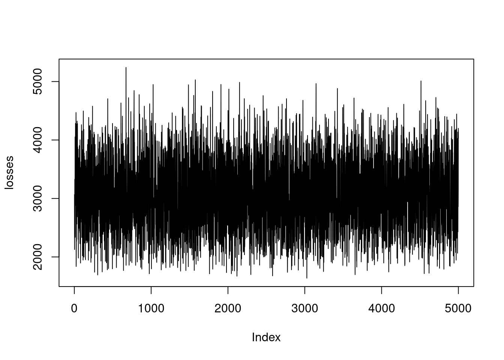
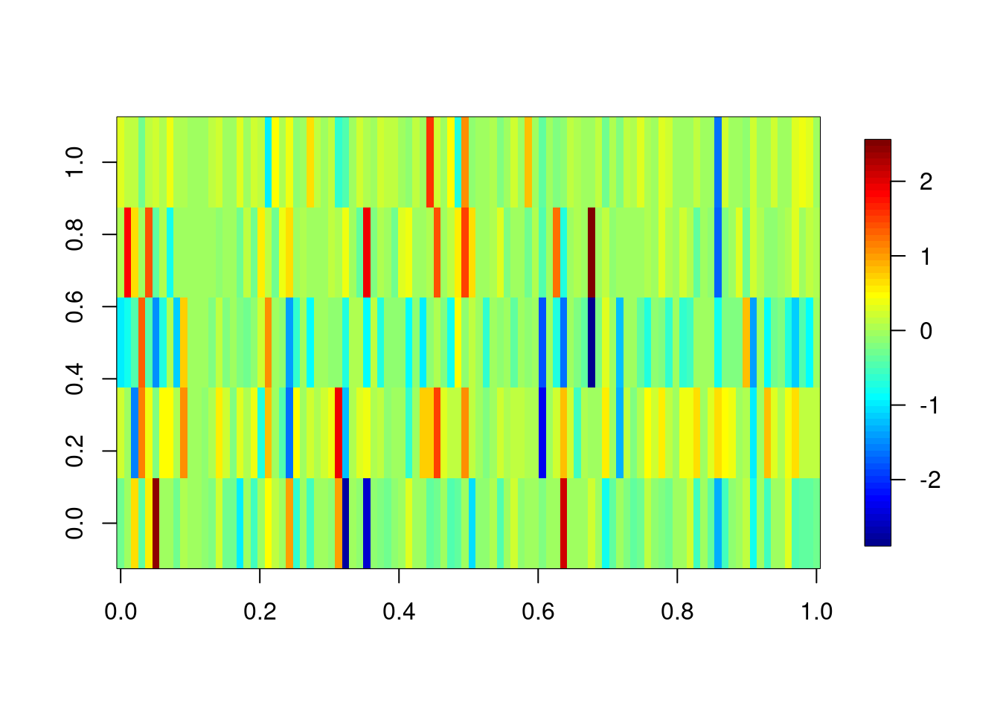
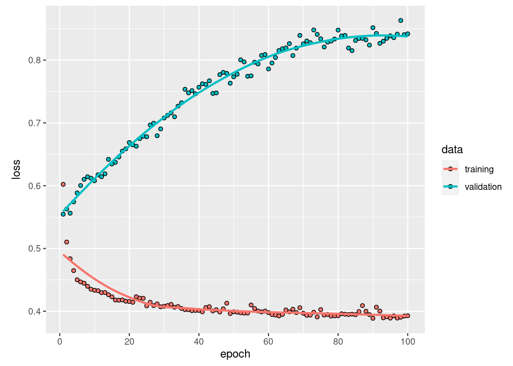

3 Fundamental Principles and Techniques
3.1 Machine learning principles
3.1.1 Optimization
Out of Wikipedia: “An optimization problem is the problem of finding the best solution from all feasible solutions.”
Why do we need this “optimization?”
Somehow, we need to tell the algorithm what it should learn. To do so we have the so called loss-function, which expresses what our goal is. But we also need to find the configurations where the loss function attains its minimum. This is the job of the optimizer. Thus, an optimization consists of:
A loss function (e.g. we tell the algorithm in each training step how many observations were miss-classified) guides the training of machine learning algorithms
The optimizer, which tries to update the weights of the machine learning algorithms in a way that the loss function is minimized
Calculating the global optimum analytically is a non-trivial problem and thus a bunch of diverse optimization algorithms evolved.
Some optimization algorithms are inspired by biological systems e.g. ants, bees, or even slimes. These optimizers are explained in the following video, have a look:
3.1.1.1 Small Optimization Example
As an easy example for an optimization we can think of a quadratic function:
func = function(x) return(x^2)This function is so easy, we can randomly probe it and identify the optimum by plotting.
a = rnorm(100)
plot(a, func(a))
The minimal value is at \(x = 0\) (to be honest, we can calculate this analytically in this simple case).
We can also use an optimizer with the optim-function (the first argument is the starting value):
opt = optim(1.0, func)## Warning in optim(1, func): one-dimensional optimization by Nelder-Mead is unreliable:
## use "Brent" or optimize() directlyprint(opt$par)## [1] -8.881784e-16opt$par will return the best values found by the optimizer, which is really close to zero :)
3.1.1.2 Advanced Optimization Example
Optimization is also done when fitting a linear regression model. Thereby, we optimize the weights (intercept and slope). Just using lm(y~x) is too simple. We want to do this by hand to also better understand what optimization is and how it works.
As an example we take the airquality data set. First, we have to be sure to have no NAs in there. Then we split into response (Ozone) and predictors (Month, Day, Solar.R, Wind, Temp). Additionally it is beneficial for the optimizer, when the different predictors have the same support, and thus we scale them.
data = airquality[complete.cases(airquality$Ozone) & complete.cases(airquality$Solar.R),]
X = scale(data[,-1])
Y = data$OzoneThe model we want to optimize: \(Ozone = Solar.R \cdot X1 + Wind \cdot X2 + Temp \cdot X3 + Month \cdot X4 + Day \cdot X5 + X6\)
We assume that the residuals are normally distributed, and our loss function to be the mean squared error: \(mean(\text{predicted ozone} - \text{true ozone})^{2}\)
Our task is now to find the parameters \(X1,\dots,X6\) for which this loss function is minimal. Therefore, we implement a function, that takes parameters and returns the loss.
linear_regression = function(w){
pred = w[1]*X[,1] + # Solar.R
w[2]*X[,2] + # Wind
w[3]*X[,3] + # Temp
w[4]*X[,4] + # Month
w[5]*X[,5] +
w[6] # or X * w[1:5]^T + w[6]
# loss = MSE, we want to find the optimal weights
# to minimize the sum of squared residuals
loss = mean((pred - Y)^2)
return(loss)
}For example we can sample some weights and see how the loss changes with this weights.
set.seed(123)
linear_regression(runif(6))## [1] 2866.355We can try to find the optimum by bruteforce (what means we will use a random set of weights and see for which the loss function is minimal):
set.seed(123)
random_search = matrix(runif(6*5000, -10, 10), 5000, 6)
losses = apply(random_search, 1, linear_regression)
plot(losses, type = "l")
random_search[which.min(losses),]## [1] 7.411631 -7.018960 9.376949 6.490659 5.432706 9.460573In most cases, bruteforce isn’t a good approach. It might work well with only a few parameters, but with increasing complexity and more parameters it will take a long time. Furthermore it is not guaranteed that it finds a stable solution.
In R the optim function helps computing the optimum faster.
opt = optim(runif(6, -1, 1), linear_regression)
opt$par## [1] 1.631666 -17.272902 11.645608 -7.371417 1.754860 42.577956In the background, mostly some gradient descent methods are used.
By comparing the weights from the optimizer to the estimated weights of the lm() function, we see that our self-written code obtains the same weights as the lm. Keep in mind, that our simple method uses random numbers thus the results might differ each run (without setting the seed).
coef(lm(Y~X))## (Intercept) XSolar.R XWind XTemp XMonth XDay
## 42.099099 4.582620 -11.806072 18.066786 -4.479175 2.3847053.1.2 Regularization
Regularization means adding information or structure to a system in order to solve an ill-posed optimization problem or to prevent overfitting. There are many ways of regularizing a machine learning model. The most important distinction is between shrinkage estimators and estimators based on model averaging.
Shrikage estimators are based on the idea of adding a penalty to the loss function that penalizes deviations of the model parameters from a particular value (typically 0). In this way, estimates are “shrunk” to the specified default value. In practice, the most important penalties are the least absolute shrinkage and selection operator; also Lasso or LASSO, where the penalty is proportional to the sum of absolute deviations (L1 penalty), and the Tikhonov regularization aka ridge regression, where the penalty is proportional to the sum of squared distances from the reference (L2 penalty). Thus, the loss function that we optimize is given by
\[ loss = fit - \lambda \cdot d \] where fit refers to the standard loss function, \(\lambda\) is the strength of the regularization, and \(d\) is the chosen metric, e.g. L1 or L2: \[ loss_{L1} = fit - \lambda \cdot \Vert weights \Vert_1 \] \[ loss_{L2} = fit - \lambda \cdot \Vert weights \Vert_2 \] \(\lambda\) and possibly d are typically optimized under cross-validation. L1 and L2 can be also combined what is then called elastic net (see Zou and Hastie (2005)).
Model averaging refers to an entire set of techniques, including boosting, bagging and other averaging techniques. The general principle is that predictions are made by combining (= averaging) several models. This is based on on the insight that it is often more efficient having many simpler models and average them, than one “super model.” The reasons are complicated, and explained in more detail in Dormann et al. (2018).
A particular important application of averaging is boosting, where the idea is that many weak learners are combined to a model average, resulting in a strong learner. Another related method is bootstrap aggregating, also called bagging. Idea here is to boostrap (use random sampling with replacement ) the data, and average the bootstrapped predictions.
To see how these techniques work in practice, let’s first focus on LASSO and ridge regularization for weights in neural networks. We can imagine that the LASSO and ridge act similar to a rubber band on the weights that pulls them to zero if the data does not strongly push them away from zero. This leads to important weights, which are supported by the data, being estimated as different from zero, whereas unimportant model structures are reduced (shrunken) to zero.
LASSO (penalty ~ sum(abs(weights))) and ridge (penalty ~ (sum(weights))^2) have slightly different properties. They are best understood if we express those as the effective prior preference they create on the parameters:

As you can see, the LASSO creates a very strong preference towards exactly zero, but falls off less strongly towards the tails. This means that parameters tend to be estimated either to exactly zero, or, if not, they are more free than the ridge. For this reason, LASSO is often more interpreted as a model selection method.
The ridge, on the other hand, has a certain area around zero where it is relatively indifferent about deviations from zero, thus rarely leading to exactly zero values. However, it will create a stronger shrinkage for values that deviate significantly from zero.
We can implement the linear regression also in Keras, when we do not specify any hidden layers:
library(keras)
data = airquality[complete.cases(airquality),]
X = scale(data[,-1])
Y = data$Ozone
# l1/l2 on linear model
model = keras_model_sequential()
model %>%
layer_dense(units = 1L, activation = "linear", input_shape = list(dim(X)[2]))
summary(model)## Model: "sequential"
## ________________________________________________________________________________
## Layer (type) Output Shape Param #
## ================================================================================
## dense (Dense) (None, 1) 6
## ================================================================================
## Total params: 6
## Trainable params: 6
## Non-trainable params: 0
## ________________________________________________________________________________model %>%
compile(loss = loss_mean_squared_error, optimizer_adamax(lr = 0.5),
metrics = c(metric_mean_squared_error))
model_history =
model %>%
fit(x = X, y = Y, epochs = 100L, batch_size = 20L, shuffle = TRUE)
unconstrained = model$get_weights()
summary(lm(Y~X))##
## Call:
## lm(formula = Y ~ X)
##
## Residuals:
## Min 1Q Median 3Q Max
## -37.014 -12.284 -3.302 8.454 95.348
##
## Coefficients:
## Estimate Std. Error t value Pr(>|t|)
## (Intercept) 42.099 1.980 21.264 < 2e-16 ***
## XSolar.R 4.583 2.135 2.147 0.0341 *
## XWind -11.806 2.293 -5.149 1.23e-06 ***
## XTemp 18.067 2.610 6.922 3.66e-10 ***
## XMonth -4.479 2.230 -2.009 0.0471 *
## XDay 2.385 2.000 1.192 0.2358
## ---
## Signif. codes: 0 '***' 0.001 '**' 0.01 '*' 0.05 '.' 0.1 ' ' 1
##
## Residual standard error: 20.86 on 105 degrees of freedom
## Multiple R-squared: 0.6249, Adjusted R-squared: 0.6071
## F-statistic: 34.99 on 5 and 105 DF, p-value: < 2.2e-16coef(lm(Y~X))## (Intercept) XSolar.R XWind XTemp XMonth XDay
## 42.099099 4.582620 -11.806072 18.066786 -4.479175 2.384705Torch
library(torch)
model_torch = nn_sequential(
nn_linear(in_features = dim(X)[2], out_features = 1L)
)
opt = optim_adam(params = model_torch$parameters, lr = 0.5)
X_torch = torch_tensor(X)
Y_torch = torch_tensor(matrix(Y, ncol = 1L), dtype = torch_float32())
for(i in 1:500) {
indices = sample.int(nrow(X), 20L)
opt$zero_grad()
pred = model_torch(X_torch[indices, ])
loss = nnf_mse_loss(pred, Y_torch[indices,,drop=FALSE])
loss$sum()$backward()
opt$step()
}
coef(lm(Y~X))## (Intercept) XSolar.R XWind XTemp XMonth XDay
## 42.099099 4.582620 -11.806072 18.066786 -4.479175 2.384705model_torch$parameters## $`0.weight`
## torch_tensor
## 5.2088 -11.3814 17.5097 -6.8541 4.5464
## [ CPUFloatType{1,5} ]
##
## $`0.bias`
## torch_tensor
## 41.7089
## [ CPUFloatType{1} ]TensorFlow and thus Keras also allows use to use LASSO and ridge on the weights. Lets see what happens when we put an l1 (LASSO) regularization on the weights:
model = keras_model_sequential()
model %>% # Remind the penalty lambda that is set to 10 here.
layer_dense(units = 1L, activation = "linear", input_shape = list(dim(X)[2]),
kernel_regularizer = regularizer_l1(10),
bias_regularizer = regularizer_l1(10))
summary(model)## Model: "sequential_1"
## ________________________________________________________________________________
## Layer (type) Output Shape Param #
## ================================================================================
## dense_1 (Dense) (None, 1) 6
## ================================================================================
## Total params: 6
## Trainable params: 6
## Non-trainable params: 0
## ________________________________________________________________________________model %>%
compile(loss = loss_mean_squared_error, optimizer_adamax(lr = 0.5),
metrics = c(metric_mean_squared_error))
model_history =
model %>%
fit(x = X, y = Y, epochs = 30L, batch_size = 20L, shuffle = TRUE)
l1 = model$get_weights()
summary(lm(Y~X))##
## Call:
## lm(formula = Y ~ X)
##
## Residuals:
## Min 1Q Median 3Q Max
## -37.014 -12.284 -3.302 8.454 95.348
##
## Coefficients:
## Estimate Std. Error t value Pr(>|t|)
## (Intercept) 42.099 1.980 21.264 < 2e-16 ***
## XSolar.R 4.583 2.135 2.147 0.0341 *
## XWind -11.806 2.293 -5.149 1.23e-06 ***
## XTemp 18.067 2.610 6.922 3.66e-10 ***
## XMonth -4.479 2.230 -2.009 0.0471 *
## XDay 2.385 2.000 1.192 0.2358
## ---
## Signif. codes: 0 '***' 0.001 '**' 0.01 '*' 0.05 '.' 0.1 ' ' 1
##
## Residual standard error: 20.86 on 105 degrees of freedom
## Multiple R-squared: 0.6249, Adjusted R-squared: 0.6071
## F-statistic: 34.99 on 5 and 105 DF, p-value: < 2.2e-16coef(lm(Y~X))## (Intercept) XSolar.R XWind XTemp XMonth XDay
## 42.099099 4.582620 -11.806072 18.066786 -4.479175 2.384705cbind(unlist(l1), unlist(unconstrained))## [,1] [,2]
## [1,] 2.237439394 4.456253
## [2,] -9.041791916 -12.007765
## [3,] 11.787180901 17.975304
## [4,] -0.002870745 -4.597271
## [5,] 0.038705204 2.279514
## [6,] 32.060939789 42.032326One can clearly see that parameters are pulled towards zero because of the regularization.
Torch
In Torch, we have to specify the regularization on our own when calculating the loss.
model_torch = nn_sequential(
nn_linear(in_features = dim(X)[2], out_features = 1L)
)
opt = optim_adam(params = model_torch$parameters, lr = 0.5)
X_torch = torch_tensor(X)
Y_torch = torch_tensor(matrix(Y, ncol = 1L), dtype = torch_float32())
for(i in 1:500) {
indices = sample.int(nrow(X), 20L)
opt$zero_grad()
pred = model_torch(X_torch[indices, ])
loss = nnf_mse_loss(pred, Y_torch[indices,,drop=FALSE])
# Add l1:
for(i in 1:length(model_torch$parameters)){
# Remind the penalty lambda that is set to 10 here.
loss = loss + model_torch$parameters[[i]]$abs()$sum()*10.0
}
loss$sum()$backward()
opt$step()
}
coef(lm(Y~X))## (Intercept) XSolar.R XWind XTemp XMonth XDay
## 42.099099 4.582620 -11.806072 18.066786 -4.479175 2.384705model_torch$parameters## $`0.weight`
## torch_tensor
## 2.6855 -9.8384 14.5780 0.0634 0.7307
## [ CPUFloatType{1,5} ]
##
## $`0.bias`
## torch_tensor
## 37.9258
## [ CPUFloatType{1} ]3.2 Tree-based Machine Learning Algorithms
Famous machine learning algorithms such as Random Forest and gradient boosted trees are based on classification- and regression trees.
3.2.1 Classification and Regression Trees
Tree-based models in general use a series of if-then rules to generate predictions from one or more decision trees. In this lecture, we will explore regression and classification trees by the example of the airquality data set. There is one important hyper-parameter for regression trees: minsplit
- It controls the depth of tree (see the help of rpart for a description).
- It controls the complexity of the tree and can thus also be seen as a regularization parameter.
We first prepare and visualize the data and afterwards fit a decision tree.
library(rpart)library(rpart.plot)
data = airquality[complete.cases(airquality),]Fit and visualize a regression tree:
rt = rpart(Ozone~., data = data, control = rpart.control(minsplit = 10))
rpart.plot(rt)
Visualize the predictions:
pred = predict(rt, data)
plot(data$Temp, data$Ozone)
lines(data$Temp[order(data$Temp)], pred[order(data$Temp)], col = "red")The angular form of the prediction line is typical for regression trees and is a weakness of it.
3.2.2 Random Forest
To overcome this weakness, a random forest uses an ensemble of regression/classification trees. Thus, the random forest is in principle nothing else than a normal regression/classification tree, but it uses the idea of the “wisdom of the crowd” : By asking many people (regression/classification trees) one can make a more informed decision (prediction/classification). When you want to buy a new phone for example you also wouldn’t go directly into the shop, but search in the internet and ask your friends and family.
There are two randomization steps with the random forest that are responsible for their success:
- Bootstrap samples for each tree (we will sample observations with replacement from the data set. For the phone this is like not everyone has experience about each phone).
- At each split, we will sample a subset of predictors that is then considered as potential splitting criterion (for the phone this is like that not everyone has the same decision criteria). Annotation: While building a decision tree (random forests consist of many decision trees), one splits the data at some point according to their features. For example if you have females and males, big and small people in a crowd, you con split this crowd by gender and then by size or by size and then by gender to build a decision tree.
Applying the random forest follows the same principle as for the methods before: We visualize the data (we have already done this so often for the airquality data set, thus we skip it here), fit the algorithm and then plot the outcomes.
Fit a random forest and visualize the predictions:
set.seed(123)
library(randomForest)## randomForest 4.6-14## Type rfNews() to see new features/changes/bug fixes.rf = randomForest(Ozone~., data = data)
pred = predict(rf, data)
plot(Ozone~Temp, data = data)
lines(data$Temp[order(data$Temp)], pred[order(data$Temp)], col = "red")One advantage of random forests is that we will get an importance of variables. At each split in each tree, the improvement in the split-criterion is the importance measure attributed to the splitting variable, and is accumulated over all the trees in the forest separately for each variable. Thus the variable importance shows us how important a variable is averaged over all trees.
rf$importance## IncNodePurity
## Solar.R 17969.59
## Wind 31978.36
## Temp 34176.71
## Month 10753.73
## Day 15436.47There are several important hyperparameters in a random forest that we can tune to get better results:
- Similar to the minsplit parameter in regression and classification trees, the hyper parameter nodesize controls for complexity -> Minimum size of terminal nodes in the tree. Setting this number larger causes smaller trees to be grown (and thus take less time). Note that the default values are different for classification (1) and regression (5).
- mtry: Number of features randomly sampled as candidates at each split.
3.3 Distance-based Algorithms
In this chapter, we introduce support-vector machines (SVMs) and other distance-based methods
3.3.1 K-Nearest-Neighbor
K-nearest-neighbor (kNN) is a simple algorithm that stores all the available cases and classifies the new data based on a similarity measure. It is mostly used to classify a data point based on how its k nearest neighbors are classified.
Let us first see an example:
X = scale(iris[,1:4])
Y = iris[,5]
plot(X[-100,1], X[-100,3], col = Y)
points(X[100,1], X[100,3], col = "blue", pch = 18, cex = 1.3)
Which class would you decide for the blue point? What are the classes of the nearest points? Well, this procedure is used by the k-nearest-neighbors classifier and thus there is actually no “real” learning in a k-nearest-neighbors classification.
For applying a k-nearest-neighbors classification, we first have to scale the data set, because we deal with distances and want the same influence of all predictors. Imagine one variable has values from -10.000 to 10.000 and another from -1 to 1. Then the influence of the first variable on the distance to the other points is much stronger than the influence of the second variable. On the iris data set, we have to split the data into training and test set on our own. Then we will follow the usual pipeline.
data = iris
data[,1:4] = apply(data[,1:4],2, scale)
indices = sample.int(nrow(data), 0.7*nrow(data))
train = data[indices,]
test = data[-indices,]Fit model and create predictions:
set.seed(123)
library(kknn)
knn = kknn(Species~., train = train, test = test)
summary(knn)##
## Call:
## kknn(formula = Species ~ ., train = train, test = test)
##
## Response: "nominal"
## fit prob.setosa prob.versicolor prob.virginica
## 1 setosa 1 0.0000000 0.00000000
## 2 setosa 1 0.0000000 0.00000000
## 3 setosa 1 0.0000000 0.00000000
## 4 setosa 1 0.0000000 0.00000000
## 5 setosa 1 0.0000000 0.00000000
## 6 setosa 1 0.0000000 0.00000000
## 7 setosa 1 0.0000000 0.00000000
## 8 setosa 1 0.0000000 0.00000000
## 9 setosa 1 0.0000000 0.00000000
## 10 setosa 1 0.0000000 0.00000000
## 11 setosa 1 0.0000000 0.00000000
## 12 setosa 1 0.0000000 0.00000000
## 13 setosa 1 0.0000000 0.00000000
## 14 setosa 1 0.0000000 0.00000000
## 15 setosa 1 0.0000000 0.00000000
## 16 setosa 1 0.0000000 0.00000000
## 17 setosa 1 0.0000000 0.00000000
## 18 setosa 1 0.0000000 0.00000000
## 19 versicolor 0 0.6306039 0.36939606
## 20 versicolor 0 0.7783044 0.22169561
## 21 versicolor 0 0.9843084 0.01569160
## 22 versicolor 0 1.0000000 0.00000000
## 23 versicolor 0 0.5942914 0.40570858
## 24 versicolor 0 1.0000000 0.00000000
## 25 versicolor 0 0.9511855 0.04881448
## 26 virginica 0 0.4685071 0.53149293
## 27 virginica 0 0.0156916 0.98430840
## 28 versicolor 0 1.0000000 0.00000000
## 29 versicolor 0 0.7733970 0.22660295
## 30 versicolor 0 1.0000000 0.00000000
## 31 versicolor 0 1.0000000 0.00000000
## 32 versicolor 0 1.0000000 0.00000000
## 33 virginica 0 0.0000000 1.00000000
## 34 virginica 0 0.0000000 1.00000000
## 35 virginica 0 0.0000000 1.00000000
## 36 virginica 0 0.0000000 1.00000000
## 37 virginica 0 0.0000000 1.00000000
## 38 virginica 0 0.0000000 1.00000000
## 39 virginica 0 0.0000000 1.00000000
## 40 versicolor 0 0.9354939 0.06450608
## 41 virginica 0 0.0000000 1.00000000
## 42 virginica 0 0.0000000 1.00000000
## 43 virginica 0 0.0000000 1.00000000
## 44 versicolor 0 0.5065373 0.49346271
## 45 virginica 0 0.4908457 0.50915431table(test$Species, fitted(knn))##
## setosa versicolor virginica
## setosa 18 0 0
## versicolor 0 12 2
## virginica 0 2 113.3.2 Support Vector Machines (SVMs)
Support vectors machines have a different approach. They try to divide the predictor space into sectors for each class. To do so, a support-vector machine fits the parameters of a hyperplane (a \(n-1\) dimensional subspace in a \(n\)-dimensional space) in the predictor space by optimizing the distance between the hyperplane and the nearest point from each class.
Fitting a support-vector machine:
library(e1071)
data = iris
data[,1:4] = apply(data[,1:4], 2, scale)
indices = sample.int(nrow(data), 0.7*nrow(data))
train = data[indices,]
test = data[-indices,]
sm = svm(Species~., data = train, kernel = "linear")
pred = predict(sm, newdata = test)oldpar = par(mfrow = c(1, 2))
plot(test$Sepal.Length, test$Petal.Length,
col = pred, main = "predicted")
plot(test$Sepal.Length, test$Petal.Length,
col = test$Species, main = "observed")
par(oldpar)
mean(pred == test$Species) # accuracy## [1] 0.9777778Support-vector machines can only work on linearly separable problems. (A problem is called linearly separable if there exists at least one line in the plane with all of the points of one class on one side of the hyperplane and all the points of the others classes on the other side).
If this is not possible, we however, can use the so called kernel trick, which maps the predictor space into a (higher dimensional) space in which the problem is linear separable. After having identified the boundaries in the higher-dimensional space, we can project them back into the original dimensions.
x1 = seq(-3, 3, length.out = 100)
x2 = seq(-3, 3, length.out = 100)
X = expand.grid(x1, x2)
y = apply(X, 1, function(x) exp(-x[1]^2 - x[2]^2))
y = ifelse(1/(1+exp(-y)) < 0.62, 0, 1)
image(matrix(y, 100, 100))
animation::saveGIF({
for (i in c("truth", "linear", "radial", "sigmoid")) {
if(i == "truth"){
image(matrix(y, 100,100),
main = "Ground truth",axes = FALSE, las = 2)
}else{
sv = e1071::svm(x = X, y = factor(y), kernel = i)
image(matrix(as.numeric(as.character(predict(sv, X))), 100, 100),
main = paste0("Kernel: ", i),axes = FALSE, las = 2)
axis(1, at = seq(0,1, length.out = 10),
labels = round(seq(-3,3, length.out = 10), 1))
axis(2, at = seq(0,1, length.out = 10),
labels = round(seq(-3,3, length.out = 10), 1), las = 2)
}
}
}, movie.name = "svm.gif", autobrowse = FALSE)
As you have seen this does not work with each kernel. Thus, the problem is to find the actual correct kernel, which is again an optimization procedure and can thus be approximated.
3.4 Artificial Neural Networks
Now, we will come to artificial neural networks (ANNs), for which the topic of regularization is also important. We can specify the regularization in each layer via the kernel_regularization argument.
library(keras)
data = airquality
summary(data)## Ozone Solar.R Wind Temp
## Min. : 1.00 Min. : 7.0 Min. : 1.700 Min. :56.00
## 1st Qu.: 18.00 1st Qu.:115.8 1st Qu.: 7.400 1st Qu.:72.00
## Median : 31.50 Median :205.0 Median : 9.700 Median :79.00
## Mean : 42.13 Mean :185.9 Mean : 9.958 Mean :77.88
## 3rd Qu.: 63.25 3rd Qu.:258.8 3rd Qu.:11.500 3rd Qu.:85.00
## Max. :168.00 Max. :334.0 Max. :20.700 Max. :97.00
## NA's :37 NA's :7
## Month Day
## Min. :5.000 Min. : 1.0
## 1st Qu.:6.000 1st Qu.: 8.0
## Median :7.000 Median :16.0
## Mean :6.993 Mean :15.8
## 3rd Qu.:8.000 3rd Qu.:23.0
## Max. :9.000 Max. :31.0
## data = data[complete.cases(data),] # remove NAs
summary(data)## Ozone Solar.R Wind Temp
## Min. : 1.0 Min. : 7.0 Min. : 2.30 Min. :57.00
## 1st Qu.: 18.0 1st Qu.:113.5 1st Qu.: 7.40 1st Qu.:71.00
## Median : 31.0 Median :207.0 Median : 9.70 Median :79.00
## Mean : 42.1 Mean :184.8 Mean : 9.94 Mean :77.79
## 3rd Qu.: 62.0 3rd Qu.:255.5 3rd Qu.:11.50 3rd Qu.:84.50
## Max. :168.0 Max. :334.0 Max. :20.70 Max. :97.00
## Month Day
## Min. :5.000 Min. : 1.00
## 1st Qu.:6.000 1st Qu.: 9.00
## Median :7.000 Median :16.00
## Mean :7.216 Mean :15.95
## 3rd Qu.:9.000 3rd Qu.:22.50
## Max. :9.000 Max. :31.00X = scale(data[,2:6])
Y = data[,1]
model = keras_model_sequential()
penalty = 0.1
model %>%
layer_dense(units = 100L, activation = "relu",
input_shape = list(5L),
kernel_regularizer = regularizer_l1(penalty)) %>%
layer_dense(units = 100L, activation = "relu",
kernel_regularizer = regularizer_l1(penalty) ) %>%
layer_dense(units = 100L, activation = "relu",
kernel_regularizer = regularizer_l1(penalty)) %>%
# one output dimension with a linear activation function
layer_dense(units = 1L, activation = "linear",
kernel_regularizer = regularizer_l1(penalty))
summary(model)## Model: "sequential"
## ________________________________________________________________________________
## Layer (type) Output Shape Param #
## ================================================================================
## dense_3 (Dense) (None, 100) 600
## ________________________________________________________________________________
## dense_2 (Dense) (None, 100) 10100
## ________________________________________________________________________________
## dense_1 (Dense) (None, 100) 10100
## ________________________________________________________________________________
## dense (Dense) (None, 1) 101
## ================================================================================
## Total params: 20,901
## Trainable params: 20,901
## Non-trainable params: 0
## ________________________________________________________________________________model %>%
compile(loss = loss_mean_squared_error, keras::optimizer_adamax(0.1))
model_history =
model %>%
fit(x = X, y = matrix(Y, ncol = 1L), epochs = 100L,
batch_size = 20L, shuffle = TRUE, validation_split = 0.2)
plot(model_history)## `geom_smooth()` using formula 'y ~ x'
weights = lapply(model$weights, function(w) w$numpy() )
fields::image.plot(weights[[1]])Torch
Again, we have to do the regularization on our own:
model_torch = nn_sequential(
nn_linear(in_features = dim(X)[2], out_features = 100L),
nn_relu(),
nn_linear(100L, 100L),
nn_relu(),
nn_linear(100L, 100L),
nn_relu(),
nn_linear(100L, 1L),
)
opt = optim_adam(params = model_torch$parameters, lr = 0.1)
X_torch = torch_tensor(X)
Y_torch = torch_tensor(matrix(Y, ncol = 1L), dtype = torch_float32())
for(i in 1:500) {
indices = sample.int(nrow(X), 20L)
opt$zero_grad()
pred = model_torch(X_torch[indices, ])
loss = nnf_mse_loss(pred, Y_torch[indices,,drop=FALSE])
# Add l1 (only on the 'kernel weights'):
for(i in seq(1, 8, by = 2)){
loss = loss + model_torch$parameters[[i]]$abs()$sum()*0.1
}
loss$sum()$backward()
opt$step()
}Let’s visualize the first (input) layer:
fields::image.plot(as.matrix(model_torch$parameters$`0.weight`))
Additionally to the usual l1 and l2 regularization there is another regularization: the so called dropout-layer (we will learn about this in more detail later).
Before we specialize on any tuning, it is important to understand that machine learning always consists of a pipeline of actions.
3.5 The Standard Machine Learning Pipeline at the Eexample of the Titanic data set
The typical machine learning workflow consist of:
- Data cleaning and exploration (EDA = explorative data analysis) for exapmple with tidyverse
- Pre-processing and feature selection
- Splitting data set into training and test set for evaluation
- Model fitting
- Model evaluation
- New predictions
Here is an (optional) video that explains the entire pipeline from a slightly different perspective:
In the following example, we use tidyverse, a collection of R packages for data science / data manipulation mainly developed by Hadley Wickham. A video that explains the basics can be found here :
Another good reference is “R for data science” by Hadley Wickham.
For this lecture you need the Titanic data set provided by us. You can find it in GRIPS (datasets.RData in the dataset and submission section) or at .
We have split the data set already into training and test/prediction data sets (the test/prediction split has one column less than the train split, as the result is not known a priori).
3.5.1 Data Cleaning
Load necessary libraries:
library(keras)
library(tensorflow)
library(tidyverse)Load data set:
load("datasets.RData")
# library(EcoData)
# data(titanic_ml)
# titanic = titanic_ml
data = titanicStandard summaries:
str(data)## 'data.frame': 1309 obs. of 14 variables:
## $ pclass : int 2 1 3 3 3 3 3 1 3 1 ...
## $ survived : int 1 1 0 0 0 0 0 1 0 1 ...
## $ name : chr "Sinkkonen, Miss. Anna" "Woolner, Mr. Hugh" "Sage, Mr. Douglas Bullen" "Palsson, Master. Paul Folke" ...
## $ sex : Factor w/ 2 levels "female","male": 1 2 2 2 2 2 2 1 1 1 ...
## $ age : num 30 NA NA 6 30.5 38.5 20 53 NA 42 ...
## $ sibsp : int 0 0 8 3 0 0 0 0 0 0 ...
## $ parch : int 0 0 2 1 0 0 0 0 0 0 ...
## $ ticket : Factor w/ 929 levels "110152","110413",..: 221 123 779 542 589 873 472 823 588 834 ...
## $ fare : num 13 35.5 69.55 21.07 8.05 ...
## $ cabin : Factor w/ 187 levels "","A10","A11",..: 1 94 1 1 1 1 1 1 1 1 ...
## $ embarked : Factor w/ 4 levels "","C","Q","S": 4 4 4 4 4 4 4 2 4 2 ...
## $ boat : Factor w/ 28 levels "","1","10","11",..: 3 28 1 1 1 1 1 19 1 15 ...
## $ body : int NA NA NA NA 50 32 NA NA NA NA ...
## $ home.dest: Factor w/ 370 levels "","?Havana, Cuba",..: 121 213 1 1 1 1 322 350 1 1 ...summary(data)## pclass survived name sex
## Min. :1.000 Min. :0.0000 Length:1309 female:466
## 1st Qu.:2.000 1st Qu.:0.0000 Class :character male :843
## Median :3.000 Median :0.0000 Mode :character
## Mean :2.295 Mean :0.3853
## 3rd Qu.:3.000 3rd Qu.:1.0000
## Max. :3.000 Max. :1.0000
## NA's :655
## age sibsp parch ticket
## Min. : 0.1667 Min. :0.0000 Min. :0.000 CA. 2343: 11
## 1st Qu.:21.0000 1st Qu.:0.0000 1st Qu.:0.000 1601 : 8
## Median :28.0000 Median :0.0000 Median :0.000 CA 2144 : 8
## Mean :29.8811 Mean :0.4989 Mean :0.385 3101295 : 7
## 3rd Qu.:39.0000 3rd Qu.:1.0000 3rd Qu.:0.000 347077 : 7
## Max. :80.0000 Max. :8.0000 Max. :9.000 347082 : 7
## NA's :263 (Other) :1261
## fare cabin embarked boat
## Min. : 0.000 :1014 : 2 :823
## 1st Qu.: 7.896 C23 C25 C27 : 6 C:270 13 : 39
## Median : 14.454 B57 B59 B63 B66: 5 Q:123 C : 38
## Mean : 33.295 G6 : 5 S:914 15 : 37
## 3rd Qu.: 31.275 B96 B98 : 4 14 : 33
## Max. :512.329 C22 C26 : 4 4 : 31
## NA's :1 (Other) : 271 (Other):308
## body home.dest
## Min. : 1.0 :564
## 1st Qu.: 72.0 New York, NY : 64
## Median :155.0 London : 14
## Mean :160.8 Montreal, PQ : 10
## 3rd Qu.:256.0 Cornwall / Akron, OH: 9
## Max. :328.0 Paris, France : 9
## NA's :1188 (Other) :639head(data)## pclass survived name sex age sibsp parch
## 561 2 1 Sinkkonen, Miss. Anna female 30.0 0 0
## 321 1 1 Woolner, Mr. Hugh male NA 0 0
## 1177 3 0 Sage, Mr. Douglas Bullen male NA 8 2
## 1098 3 0 Palsson, Master. Paul Folke male 6.0 3 1
## 1252 3 0 Tomlin, Mr. Ernest Portage male 30.5 0 0
## 1170 3 0 Saether, Mr. Simon Sivertsen male 38.5 0 0
## ticket fare cabin embarked boat body
## 561 250648 13.000 S 10 NA
## 321 19947 35.500 C52 S D NA
## 1177 CA. 2343 69.550 S NA
## 1098 349909 21.075 S NA
## 1252 364499 8.050 S 50
## 1170 SOTON/O.Q. 3101262 7.250 S 32
## home.dest
## 561 Finland / Washington, DC
## 321 London, England
## 1177
## 1098
## 1252
## 1170The name variable consists of 1309 unique factors (there are 1309 observations…):
length(unique(data$name))## [1] 1307However, there is a title in each name. Let’s extract the titles:
- We will extract all names and split each name after each comma “,”
- We will split the second split of the name after a point “.” and extract the titles.
first_split = sapply(data$name,
function(x) stringr::str_split(x, pattern = ",")[[1]][2])
titles = sapply(first_split,
function(x) strsplit(x, ".",fixed = TRUE)[[1]][1])We get 18 unique titles:
table(titles)## titles
## Capt Col Don Dona Dr
## 1 4 1 1 8
## Jonkheer Lady Major Master Miss
## 1 1 2 61 260
## Mlle Mme Mr Mrs Ms
## 2 1 757 197 2
## Rev Sir the Countess
## 8 1 1A few titles have a very low occurrence rate:
titles = stringr::str_trim((titles))
titles %>%
fct_count()## # A tibble: 18 x 2
## f n
## <fct> <int>
## 1 Capt 1
## 2 Col 4
## 3 Don 1
## 4 Dona 1
## 5 Dr 8
## 6 Jonkheer 1
## 7 Lady 1
## 8 Major 2
## 9 Master 61
## 10 Miss 260
## 11 Mlle 2
## 12 Mme 1
## 13 Mr 757
## 14 Mrs 197
## 15 Ms 2
## 16 Rev 8
## 17 Sir 1
## 18 the Countess 1We will combine titles with low occurrences into one title, which we can easily do with the forcats package.
titles2 =
forcats::fct_collapse(titles,
officer = c("Capt", "Col", "Major", "Dr", "Rev"),
royal = c("Jonkheer", "Don", "Sir",
"the Countess", "Dona", "Lady"),
miss = c("Miss", "Mlle"),
mrs = c("Mrs", "Mme", "Ms")
)We can count titles again to see the new number of titles
titles2 %>%
fct_count()## # A tibble: 6 x 2
## f n
## <fct> <int>
## 1 officer 23
## 2 royal 6
## 3 Master 61
## 4 miss 262
## 5 mrs 200
## 6 Mr 757Add new title variable to data set:
data =
data %>%
mutate(title = titles2)As a second example, we will explore and clean the numeric “age” variable:
Explore the variable:
summary(data)## pclass survived name sex
## Min. :1.000 Min. :0.0000 Length:1309 female:466
## 1st Qu.:2.000 1st Qu.:0.0000 Class :character male :843
## Median :3.000 Median :0.0000 Mode :character
## Mean :2.295 Mean :0.3853
## 3rd Qu.:3.000 3rd Qu.:1.0000
## Max. :3.000 Max. :1.0000
## NA's :655
## age sibsp parch ticket
## Min. : 0.1667 Min. :0.0000 Min. :0.000 CA. 2343: 11
## 1st Qu.:21.0000 1st Qu.:0.0000 1st Qu.:0.000 1601 : 8
## Median :28.0000 Median :0.0000 Median :0.000 CA 2144 : 8
## Mean :29.8811 Mean :0.4989 Mean :0.385 3101295 : 7
## 3rd Qu.:39.0000 3rd Qu.:1.0000 3rd Qu.:0.000 347077 : 7
## Max. :80.0000 Max. :8.0000 Max. :9.000 347082 : 7
## NA's :263 (Other) :1261
## fare cabin embarked boat
## Min. : 0.000 :1014 : 2 :823
## 1st Qu.: 7.896 C23 C25 C27 : 6 C:270 13 : 39
## Median : 14.454 B57 B59 B63 B66: 5 Q:123 C : 38
## Mean : 33.295 G6 : 5 S:914 15 : 37
## 3rd Qu.: 31.275 B96 B98 : 4 14 : 33
## Max. :512.329 C22 C26 : 4 4 : 31
## NA's :1 (Other) : 271 (Other):308
## body home.dest title
## Min. : 1.0 :564 officer: 23
## 1st Qu.: 72.0 New York, NY : 64 royal : 6
## Median :155.0 London : 14 Master : 61
## Mean :160.8 Montreal, PQ : 10 miss :262
## 3rd Qu.:256.0 Cornwall / Akron, OH: 9 mrs :200
## Max. :328.0 Paris, France : 9 Mr :757
## NA's :1188 (Other) :639sum(is.na(data$age))/nrow(data)## [1] 0.200916720% NAs! Either we remove all observations with NAs, or we impute (fill) the missing values, e.g. with the median age. However, age itself might depend on other variables such as sex, class and title. We want to fill the NAs with the median age of these groups. In tidyverse we can easily “group” the data, i.e. we will nest the observations (here: group_by after sex, pclass and title). After grouping, all operations (such as our median(age….)) will be done within the specified groups.
data =
data %>%
group_by(sex, pclass, title) %>%
mutate(age2 = ifelse(is.na(age), median(age, na.rm = TRUE), age)) %>%
mutate(fare2 = ifelse(is.na(fare), median(fare, na.rm = TRUE), fare)) %>%
ungroup()3.5.2 Pre-processing and Feature Selection
We want to use Keras in our example, but it cannot handle factors and requires the data to be scaled.
Normally, one would do this for all predictors, but as we only show the pipeline here, we have sub-selected a bunch of predictors and do this only for them. We first scale the numeric predictors and change the factors with only two groups/levels into integers (this can be handled by Keras).
data_sub =
data %>%
select(survived, sex, age2, fare2, title, pclass) %>%
mutate(age2 = scales::rescale(age2, c(0,1)),
fare2 = scales::rescale(fare2, c(0,1))) %>%
mutate(sex = as.integer(sex) - 1L,
title = as.integer(title) - 1L, pclass = as.integer(pclass - 1L))Factors with more than two levels should be one hot encoded:
one_title = k_one_hot(data_sub$title, length(unique(data$title)))$numpy()
colnames(one_title) = levels(data$title)
one_sex = k_one_hot(data_sub$sex, length(unique(data$sex)))$numpy()
colnames(one_sex) = levels(data$sex)
one_pclass = k_one_hot(data_sub$pclass, length(unique(data$pclass)))$numpy()
colnames(one_pclass) = paste0(1:length(unique(data$pclass)), "pclass")A nd we have to add the dummy encoded variables to the data set:
data_sub = cbind(data.frame(survived= data_sub$survived),
one_title, one_sex, age = data_sub$age2,
fare = data_sub$fare2, one_pclass)
head(data_sub)## survived officer royal Master miss mrs Mr female male age fare
## 1 1 0 0 0 1 0 0 1 0 0.37369494 0.02537431
## 2 1 0 0 0 0 0 1 0 1 0.51774510 0.06929139
## 3 0 0 0 0 0 0 1 0 1 0.32359053 0.13575256
## 4 0 0 0 1 0 0 0 0 1 0.07306851 0.04113566
## 5 0 0 0 0 0 0 1 0 1 0.37995799 0.01571255
## 6 0 0 0 0 0 0 1 0 1 0.48016680 0.01415106
## 1pclass 2pclass 3pclass
## 1 0 1 0
## 2 1 0 0
## 3 0 0 1
## 4 0 0 1
## 5 0 0 1
## 6 0 0 13.5.3 Split Data for Training and Testing
The splitting consists of two splits:
- An outer split (the original split, remember we got a training and test split without the response “survived”).
- An inner split (we will split the training data set further into another training and test split with known response). The inner split is important to assess the model’s performance and potential overfitting.
Outer split:
train = data_sub[!is.na(data_sub$survived),]
test = data_sub[is.na(data_sub$survived),]Inner split:
indices = sample.int(nrow(train), 0.7*nrow(train))
sub_train = train[indices,]
sub_test = train[-indices,]What is the difference between the two splits? (Tip: have a look at the variable survived.)
3.5.4 Model Fitting
In the next step we will fit a Keras model on the training data of the inner split:
model = keras_model_sequential()
model %>%
layer_dense(units = 20L, input_shape = ncol(sub_train) - 1L,
activation = "relu") %>%
layer_dense(units = 20L, activation = "relu") %>%
layer_dense(units = 20L, activation = "relu") %>%
#Output layer consists of the 1-hot encoded variable "survived" -> 2 units.
layer_dense(units = 2L, activation = "softmax")
summary(model)## Model: "sequential_1"
## ________________________________________________________________________________
## Layer (type) Output Shape Param #
## ================================================================================
## dense_7 (Dense) (None, 20) 280
## ________________________________________________________________________________
## dense_6 (Dense) (None, 20) 420
## ________________________________________________________________________________
## dense_5 (Dense) (None, 20) 420
## ________________________________________________________________________________
## dense_4 (Dense) (None, 2) 42
## ================================================================================
## Total params: 1,162
## Trainable params: 1,162
## Non-trainable params: 0
## ________________________________________________________________________________model_history =
model %>%
compile(loss = loss_categorical_crossentropy,
optimizer = keras::optimizer_adamax(0.01))
model_history =
model %>%
fit(x = as.matrix(sub_train[,-1]),
y = to_categorical(sub_train[,1], num_classes = 2L),
epochs = 100L, batch_size = 32L,
validation_split = 0.2, #Again a test set used by the algorithm
shuffle = TRUE)
plot(model_history)## `geom_smooth()` using formula 'y ~ x'
Torch
model_torch = nn_sequential(
nn_linear(in_features = dim(sub_train[,-1])[2], out_features = 20L),
nn_relu(),
nn_linear(20L, 20L),
nn_relu(),
nn_linear(20L, 2L)
)
opt = optim_adam(params = model_torch$parameters, lr = 0.01)
X_torch = torch_tensor(as.matrix(sub_train[,-1]))
Y_torch = torch_tensor(sub_train[,1]+1, dtype = torch_long())
for(i in 1:500) {
indices = sample.int(nrow(sub_train), 20L)
opt$zero_grad()
pred = model_torch(X_torch[indices, ])
loss = nnf_cross_entropy(pred, Y_torch[indices], reduction = "mean")
print(loss)
loss$backward()
opt$step()
}## torch_tensor
## 0.678359
## [ CPUFloatType{} ]
## torch_tensor
## 0.669142
## [ CPUFloatType{} ]
## torch_tensor
## 0.688126
## [ CPUFloatType{} ]
## torch_tensor
## 0.600194
## [ CPUFloatType{} ]
## torch_tensor
## 0.639238
## [ CPUFloatType{} ]
## torch_tensor
## 0.573887
## [ CPUFloatType{} ]
## torch_tensor
## 0.637653
## [ CPUFloatType{} ]
## torch_tensor
## 0.573694
## [ CPUFloatType{} ]
## torch_tensor
## 0.607106
## [ CPUFloatType{} ]
## torch_tensor
## 0.549365
## [ CPUFloatType{} ]
## torch_tensor
## 0.620984
## [ CPUFloatType{} ]
## torch_tensor
## 0.677831
## [ CPUFloatType{} ]
## torch_tensor
## 0.855981
## [ CPUFloatType{} ]
## torch_tensor
## 0.721547
## [ CPUFloatType{} ]
## torch_tensor
## 0.399134
## [ CPUFloatType{} ]
## torch_tensor
## 0.534205
## [ CPUFloatType{} ]
## torch_tensor
## 0.613888
## [ CPUFloatType{} ]
## torch_tensor
## 0.475641
## [ CPUFloatType{} ]
## torch_tensor
## 0.675247
## [ CPUFloatType{} ]
## torch_tensor
## 0.475424
## [ CPUFloatType{} ]
## torch_tensor
## 0.573791
## [ CPUFloatType{} ]
## torch_tensor
## 0.507087
## [ CPUFloatType{} ]
## torch_tensor
## 0.44117
## [ CPUFloatType{} ]
## torch_tensor
## 0.734488
## [ CPUFloatType{} ]
## torch_tensor
## 0.650705
## [ CPUFloatType{} ]
## torch_tensor
## 0.490546
## [ CPUFloatType{} ]
## torch_tensor
## 0.452538
## [ CPUFloatType{} ]
## torch_tensor
## 0.581461
## [ CPUFloatType{} ]
## torch_tensor
## 0.536855
## [ CPUFloatType{} ]
## torch_tensor
## 0.445222
## [ CPUFloatType{} ]
## torch_tensor
## 0.552699
## [ CPUFloatType{} ]
## torch_tensor
## 0.545997
## [ CPUFloatType{} ]
## torch_tensor
## 0.477277
## [ CPUFloatType{} ]
## torch_tensor
## 0.374465
## [ CPUFloatType{} ]
## torch_tensor
## 0.435836
## [ CPUFloatType{} ]
## torch_tensor
## 0.523058
## [ CPUFloatType{} ]
## torch_tensor
## 0.480151
## [ CPUFloatType{} ]
## torch_tensor
## 0.456964
## [ CPUFloatType{} ]
## torch_tensor
## 0.595687
## [ CPUFloatType{} ]
## torch_tensor
## 0.340206
## [ CPUFloatType{} ]
## torch_tensor
## 0.438918
## [ CPUFloatType{} ]
## torch_tensor
## 0.489696
## [ CPUFloatType{} ]
## torch_tensor
## 0.474237
## [ CPUFloatType{} ]
## torch_tensor
## 0.367076
## [ CPUFloatType{} ]
## torch_tensor
## 0.554134
## [ CPUFloatType{} ]
## torch_tensor
## 0.298075
## [ CPUFloatType{} ]
## torch_tensor
## 0.35589
## [ CPUFloatType{} ]
## torch_tensor
## 0.636353
## [ CPUFloatType{} ]
## torch_tensor
## 0.437467
## [ CPUFloatType{} ]
## torch_tensor
## 0.605609
## [ CPUFloatType{} ]
## torch_tensor
## 0.639735
## [ CPUFloatType{} ]
## torch_tensor
## 0.585179
## [ CPUFloatType{} ]
## torch_tensor
## 0.294322
## [ CPUFloatType{} ]
## torch_tensor
## 0.565721
## [ CPUFloatType{} ]
## torch_tensor
## 0.513535
## [ CPUFloatType{} ]
## torch_tensor
## 0.500995
## [ CPUFloatType{} ]
## torch_tensor
## 0.659486
## [ CPUFloatType{} ]
## torch_tensor
## 0.377889
## [ CPUFloatType{} ]
## torch_tensor
## 0.524709
## [ CPUFloatType{} ]
## torch_tensor
## 0.385248
## [ CPUFloatType{} ]
## torch_tensor
## 0.718646
## [ CPUFloatType{} ]
## torch_tensor
## 0.585858
## [ CPUFloatType{} ]
## torch_tensor
## 0.389564
## [ CPUFloatType{} ]
## torch_tensor
## 0.614261
## [ CPUFloatType{} ]
## torch_tensor
## 0.493239
## [ CPUFloatType{} ]
## torch_tensor
## 0.481939
## [ CPUFloatType{} ]
## torch_tensor
## 0.385464
## [ CPUFloatType{} ]
## torch_tensor
## 0.549217
## [ CPUFloatType{} ]
## torch_tensor
## 0.534196
## [ CPUFloatType{} ]
## torch_tensor
## 0.435033
## [ CPUFloatType{} ]
## torch_tensor
## 0.444945
## [ CPUFloatType{} ]
## torch_tensor
## 0.357823
## [ CPUFloatType{} ]
## torch_tensor
## 0.659108
## [ CPUFloatType{} ]
## torch_tensor
## 0.439897
## [ CPUFloatType{} ]
## torch_tensor
## 0.378037
## [ CPUFloatType{} ]
## torch_tensor
## 0.435538
## [ CPUFloatType{} ]
## torch_tensor
## 0.580638
## [ CPUFloatType{} ]
## torch_tensor
## 0.426159
## [ CPUFloatType{} ]
## torch_tensor
## 0.624978
## [ CPUFloatType{} ]
## torch_tensor
## 0.436554
## [ CPUFloatType{} ]
## torch_tensor
## 0.36898
## [ CPUFloatType{} ]
## torch_tensor
## 0.461465
## [ CPUFloatType{} ]
## torch_tensor
## 0.476197
## [ CPUFloatType{} ]
## torch_tensor
## 0.383614
## [ CPUFloatType{} ]
## torch_tensor
## 0.330197
## [ CPUFloatType{} ]
## torch_tensor
## 0.518036
## [ CPUFloatType{} ]
## torch_tensor
## 0.618439
## [ CPUFloatType{} ]
## torch_tensor
## 0.59143
## [ CPUFloatType{} ]
## torch_tensor
## 0.250146
## [ CPUFloatType{} ]
## torch_tensor
## 0.474179
## [ CPUFloatType{} ]
## torch_tensor
## 0.406334
## [ CPUFloatType{} ]
## torch_tensor
## 0.338225
## [ CPUFloatType{} ]
## torch_tensor
## 0.330207
## [ CPUFloatType{} ]
## torch_tensor
## 0.349239
## [ CPUFloatType{} ]
## torch_tensor
## 0.471443
## [ CPUFloatType{} ]
## torch_tensor
## 0.407986
## [ CPUFloatType{} ]
## torch_tensor
## 0.382748
## [ CPUFloatType{} ]
## torch_tensor
## 0.472517
## [ CPUFloatType{} ]
## torch_tensor
## 0.500068
## [ CPUFloatType{} ]
## torch_tensor
## 0.450685
## [ CPUFloatType{} ]
## torch_tensor
## 0.534073
## [ CPUFloatType{} ]
## torch_tensor
## 0.427761
## [ CPUFloatType{} ]
## torch_tensor
## 0.672691
## [ CPUFloatType{} ]
## torch_tensor
## 0.461344
## [ CPUFloatType{} ]
## torch_tensor
## 0.44568
## [ CPUFloatType{} ]
## torch_tensor
## 0.4162
## [ CPUFloatType{} ]
## torch_tensor
## 0.250524
## [ CPUFloatType{} ]
## torch_tensor
## 0.334042
## [ CPUFloatType{} ]
## torch_tensor
## 0.465278
## [ CPUFloatType{} ]
## torch_tensor
## 0.497283
## [ CPUFloatType{} ]
## torch_tensor
## 0.480101
## [ CPUFloatType{} ]
## torch_tensor
## 0.349122
## [ CPUFloatType{} ]
## torch_tensor
## 0.373282
## [ CPUFloatType{} ]
## torch_tensor
## 0.385404
## [ CPUFloatType{} ]
## torch_tensor
## 0.242106
## [ CPUFloatType{} ]
## torch_tensor
## 0.501912
## [ CPUFloatType{} ]
## torch_tensor
## 0.511536
## [ CPUFloatType{} ]
## torch_tensor
## 0.421234
## [ CPUFloatType{} ]
## torch_tensor
## 0.304223
## [ CPUFloatType{} ]
## torch_tensor
## 0.315395
## [ CPUFloatType{} ]
## torch_tensor
## 0.464368
## [ CPUFloatType{} ]
## torch_tensor
## 0.701926
## [ CPUFloatType{} ]
## torch_tensor
## 0.21868
## [ CPUFloatType{} ]
## torch_tensor
## 0.292151
## [ CPUFloatType{} ]
## torch_tensor
## 0.449125
## [ CPUFloatType{} ]
## torch_tensor
## 0.641562
## [ CPUFloatType{} ]
## torch_tensor
## 0.562348
## [ CPUFloatType{} ]
## torch_tensor
## 0.346379
## [ CPUFloatType{} ]
## torch_tensor
## 0.764175
## [ CPUFloatType{} ]
## torch_tensor
## 0.357162
## [ CPUFloatType{} ]
## torch_tensor
## 0.581845
## [ CPUFloatType{} ]
## torch_tensor
## 0.282338
## [ CPUFloatType{} ]
## torch_tensor
## 0.248062
## [ CPUFloatType{} ]
## torch_tensor
## 0.334125
## [ CPUFloatType{} ]
## torch_tensor
## 0.497166
## [ CPUFloatType{} ]
## torch_tensor
## 0.392425
## [ CPUFloatType{} ]
## torch_tensor
## 0.727931
## [ CPUFloatType{} ]
## torch_tensor
## 0.278575
## [ CPUFloatType{} ]
## torch_tensor
## 0.337237
## [ CPUFloatType{} ]
## torch_tensor
## 0.249911
## [ CPUFloatType{} ]
## torch_tensor
## 0.412402
## [ CPUFloatType{} ]
## torch_tensor
## 0.274228
## [ CPUFloatType{} ]
## torch_tensor
## 0.416423
## [ CPUFloatType{} ]
## torch_tensor
## 0.440403
## [ CPUFloatType{} ]
## torch_tensor
## 0.387785
## [ CPUFloatType{} ]
## torch_tensor
## 0.632766
## [ CPUFloatType{} ]
## torch_tensor
## 0.423192
## [ CPUFloatType{} ]
## torch_tensor
## 0.597545
## [ CPUFloatType{} ]
## torch_tensor
## 0.420072
## [ CPUFloatType{} ]
## torch_tensor
## 0.251319
## [ CPUFloatType{} ]
## torch_tensor
## 0.256262
## [ CPUFloatType{} ]
## torch_tensor
## 0.452517
## [ CPUFloatType{} ]
## torch_tensor
## 0.338996
## [ CPUFloatType{} ]
## torch_tensor
## 0.3817
## [ CPUFloatType{} ]
## torch_tensor
## 0.713614
## [ CPUFloatType{} ]
## torch_tensor
## 0.390393
## [ CPUFloatType{} ]
## torch_tensor
## 0.520694
## [ CPUFloatType{} ]
## torch_tensor
## 0.43994
## [ CPUFloatType{} ]
## torch_tensor
## 0.542127
## [ CPUFloatType{} ]
## torch_tensor
## 0.350562
## [ CPUFloatType{} ]
## torch_tensor
## 0.543817
## [ CPUFloatType{} ]
## torch_tensor
## 0.539706
## [ CPUFloatType{} ]
## torch_tensor
## 0.426142
## [ CPUFloatType{} ]
## torch_tensor
## 0.651753
## [ CPUFloatType{} ]
## torch_tensor
## 0.335024
## [ CPUFloatType{} ]
## torch_tensor
## 0.385607
## [ CPUFloatType{} ]
## torch_tensor
## 0.582095
## [ CPUFloatType{} ]
## torch_tensor
## 0.508016
## [ CPUFloatType{} ]
## torch_tensor
## 0.67005
## [ CPUFloatType{} ]
## torch_tensor
## 0.387449
## [ CPUFloatType{} ]
## torch_tensor
## 0.509216
## [ CPUFloatType{} ]
## torch_tensor
## 0.372968
## [ CPUFloatType{} ]
## torch_tensor
## 0.563902
## [ CPUFloatType{} ]
## torch_tensor
## 0.43627
## [ CPUFloatType{} ]
## torch_tensor
## 0.425989
## [ CPUFloatType{} ]
## torch_tensor
## 0.39249
## [ CPUFloatType{} ]
## torch_tensor
## 0.442534
## [ CPUFloatType{} ]
## torch_tensor
## 0.277451
## [ CPUFloatType{} ]
## torch_tensor
## 0.404534
## [ CPUFloatType{} ]
## torch_tensor
## 0.496133
## [ CPUFloatType{} ]
## torch_tensor
## 0.429227
## [ CPUFloatType{} ]
## torch_tensor
## 0.511836
## [ CPUFloatType{} ]
## torch_tensor
## 0.331715
## [ CPUFloatType{} ]
## torch_tensor
## 0.452807
## [ CPUFloatType{} ]
## torch_tensor
## 0.41071
## [ CPUFloatType{} ]
## torch_tensor
## 0.317215
## [ CPUFloatType{} ]
## torch_tensor
## 0.412875
## [ CPUFloatType{} ]
## torch_tensor
## 0.342358
## [ CPUFloatType{} ]
## torch_tensor
## 0.610893
## [ CPUFloatType{} ]
## torch_tensor
## 0.297823
## [ CPUFloatType{} ]
## torch_tensor
## 0.484552
## [ CPUFloatType{} ]
## torch_tensor
## 0.334721
## [ CPUFloatType{} ]
## torch_tensor
## 0.501967
## [ CPUFloatType{} ]
## torch_tensor
## 0.447652
## [ CPUFloatType{} ]
## torch_tensor
## 1.04294
## [ CPUFloatType{} ]
## torch_tensor
## 0.431939
## [ CPUFloatType{} ]
## torch_tensor
## 0.328927
## [ CPUFloatType{} ]
## torch_tensor
## 0.386389
## [ CPUFloatType{} ]
## torch_tensor
## 0.490965
## [ CPUFloatType{} ]
## torch_tensor
## 0.478291
## [ CPUFloatType{} ]
## torch_tensor
## 0.561933
## [ CPUFloatType{} ]
## torch_tensor
## 0.410729
## [ CPUFloatType{} ]
## torch_tensor
## 0.440795
## [ CPUFloatType{} ]
## torch_tensor
## 0.413415
## [ CPUFloatType{} ]
## torch_tensor
## 0.567167
## [ CPUFloatType{} ]
## torch_tensor
## 0.507849
## [ CPUFloatType{} ]
## torch_tensor
## 0.479971
## [ CPUFloatType{} ]
## torch_tensor
## 0.429894
## [ CPUFloatType{} ]
## torch_tensor
## 0.360399
## [ CPUFloatType{} ]
## torch_tensor
## 0.405771
## [ CPUFloatType{} ]
## torch_tensor
## 0.548938
## [ CPUFloatType{} ]
## torch_tensor
## 0.517113
## [ CPUFloatType{} ]
## torch_tensor
## 0.616184
## [ CPUFloatType{} ]
## torch_tensor
## 0.361017
## [ CPUFloatType{} ]
## torch_tensor
## 0.4316
## [ CPUFloatType{} ]
## torch_tensor
## 0.44146
## [ CPUFloatType{} ]
## torch_tensor
## 0.516791
## [ CPUFloatType{} ]
## torch_tensor
## 0.407586
## [ CPUFloatType{} ]
## torch_tensor
## 0.573429
## [ CPUFloatType{} ]
## torch_tensor
## 0.277511
## [ CPUFloatType{} ]
## torch_tensor
## 0.353589
## [ CPUFloatType{} ]
## torch_tensor
## 0.751263
## [ CPUFloatType{} ]
## torch_tensor
## 0.561186
## [ CPUFloatType{} ]
## torch_tensor
## 0.659888
## [ CPUFloatType{} ]
## torch_tensor
## 0.26788
## [ CPUFloatType{} ]
## torch_tensor
## 0.354833
## [ CPUFloatType{} ]
## torch_tensor
## 0.438056
## [ CPUFloatType{} ]
## torch_tensor
## 0.648554
## [ CPUFloatType{} ]
## torch_tensor
## 0.356668
## [ CPUFloatType{} ]
## torch_tensor
## 0.321357
## [ CPUFloatType{} ]
## torch_tensor
## 0.211141
## [ CPUFloatType{} ]
## torch_tensor
## 0.784881
## [ CPUFloatType{} ]
## torch_tensor
## 0.467641
## [ CPUFloatType{} ]
## torch_tensor
## 0.396159
## [ CPUFloatType{} ]
## torch_tensor
## 0.397904
## [ CPUFloatType{} ]
## torch_tensor
## 0.441776
## [ CPUFloatType{} ]
## torch_tensor
## 0.476447
## [ CPUFloatType{} ]
## torch_tensor
## 0.589563
## [ CPUFloatType{} ]
## torch_tensor
## 0.470855
## [ CPUFloatType{} ]
## torch_tensor
## 0.372604
## [ CPUFloatType{} ]
## torch_tensor
## 0.356694
## [ CPUFloatType{} ]
## torch_tensor
## 0.404249
## [ CPUFloatType{} ]
## torch_tensor
## 0.539237
## [ CPUFloatType{} ]
## torch_tensor
## 0.434313
## [ CPUFloatType{} ]
## torch_tensor
## 0.350857
## [ CPUFloatType{} ]
## torch_tensor
## 0.307786
## [ CPUFloatType{} ]
## torch_tensor
## 0.501324
## [ CPUFloatType{} ]
## torch_tensor
## 0.390399
## [ CPUFloatType{} ]
## torch_tensor
## 0.523617
## [ CPUFloatType{} ]
## torch_tensor
## 0.38722
## [ CPUFloatType{} ]
## torch_tensor
## 0.374961
## [ CPUFloatType{} ]
## torch_tensor
## 0.31783
## [ CPUFloatType{} ]
## torch_tensor
## 0.426523
## [ CPUFloatType{} ]
## torch_tensor
## 0.237516
## [ CPUFloatType{} ]
## torch_tensor
## 0.379277
## [ CPUFloatType{} ]
## torch_tensor
## 0.379707
## [ CPUFloatType{} ]
## torch_tensor
## 0.416056
## [ CPUFloatType{} ]
## torch_tensor
## 0.344904
## [ CPUFloatType{} ]
## torch_tensor
## 0.335514
## [ CPUFloatType{} ]
## torch_tensor
## 0.334927
## [ CPUFloatType{} ]
## torch_tensor
## 0.723985
## [ CPUFloatType{} ]
## torch_tensor
## 0.390927
## [ CPUFloatType{} ]
## torch_tensor
## 0.411479
## [ CPUFloatType{} ]
## torch_tensor
## 0.577207
## [ CPUFloatType{} ]
## torch_tensor
## 0.642009
## [ CPUFloatType{} ]
## torch_tensor
## 0.732975
## [ CPUFloatType{} ]
## torch_tensor
## 0.468361
## [ CPUFloatType{} ]
## torch_tensor
## 0.545493
## [ CPUFloatType{} ]
## torch_tensor
## 0.341765
## [ CPUFloatType{} ]
## torch_tensor
## 0.671437
## [ CPUFloatType{} ]
## torch_tensor
## 0.453105
## [ CPUFloatType{} ]
## torch_tensor
## 0.573352
## [ CPUFloatType{} ]
## torch_tensor
## 0.441464
## [ CPUFloatType{} ]
## torch_tensor
## 0.476019
## [ CPUFloatType{} ]
## torch_tensor
## 0.632032
## [ CPUFloatType{} ]
## torch_tensor
## 0.44894
## [ CPUFloatType{} ]
## torch_tensor
## 0.561504
## [ CPUFloatType{} ]
## torch_tensor
## 0.45489
## [ CPUFloatType{} ]
## torch_tensor
## 0.535489
## [ CPUFloatType{} ]
## torch_tensor
## 0.4832
## [ CPUFloatType{} ]
## torch_tensor
## 0.549284
## [ CPUFloatType{} ]
## torch_tensor
## 0.371321
## [ CPUFloatType{} ]
## torch_tensor
## 0.441482
## [ CPUFloatType{} ]
## torch_tensor
## 0.264565
## [ CPUFloatType{} ]
## torch_tensor
## 0.367464
## [ CPUFloatType{} ]
## torch_tensor
## 0.29589
## [ CPUFloatType{} ]
## torch_tensor
## 0.404088
## [ CPUFloatType{} ]
## torch_tensor
## 0.340357
## [ CPUFloatType{} ]
## torch_tensor
## 0.246925
## [ CPUFloatType{} ]
## torch_tensor
## 0.40244
## [ CPUFloatType{} ]
## torch_tensor
## 0.607803
## [ CPUFloatType{} ]
## torch_tensor
## 0.577973
## [ CPUFloatType{} ]
## torch_tensor
## 0.453868
## [ CPUFloatType{} ]
## torch_tensor
## 0.621693
## [ CPUFloatType{} ]
## torch_tensor
## 0.34885
## [ CPUFloatType{} ]
## torch_tensor
## 0.297007
## [ CPUFloatType{} ]
## torch_tensor
## 0.452854
## [ CPUFloatType{} ]
## torch_tensor
## 0.276267
## [ CPUFloatType{} ]
## torch_tensor
## 0.631585
## [ CPUFloatType{} ]
## torch_tensor
## 0.666992
## [ CPUFloatType{} ]
## torch_tensor
## 0.389638
## [ CPUFloatType{} ]
## torch_tensor
## 0.214307
## [ CPUFloatType{} ]
## torch_tensor
## 0.545385
## [ CPUFloatType{} ]
## torch_tensor
## 0.391171
## [ CPUFloatType{} ]
## torch_tensor
## 0.434997
## [ CPUFloatType{} ]
## torch_tensor
## 0.337479
## [ CPUFloatType{} ]
## torch_tensor
## 0.630213
## [ CPUFloatType{} ]
## torch_tensor
## 0.762698
## [ CPUFloatType{} ]
## torch_tensor
## 0.418826
## [ CPUFloatType{} ]
## torch_tensor
## 0.379458
## [ CPUFloatType{} ]
## torch_tensor
## 0.516912
## [ CPUFloatType{} ]
## torch_tensor
## 0.336211
## [ CPUFloatType{} ]
## torch_tensor
## 0.363475
## [ CPUFloatType{} ]
## torch_tensor
## 0.583542
## [ CPUFloatType{} ]
## torch_tensor
## 0.45648
## [ CPUFloatType{} ]
## torch_tensor
## 0.697072
## [ CPUFloatType{} ]
## torch_tensor
## 0.352666
## [ CPUFloatType{} ]
## torch_tensor
## 0.387655
## [ CPUFloatType{} ]
## torch_tensor
## 0.418486
## [ CPUFloatType{} ]
## torch_tensor
## 0.555988
## [ CPUFloatType{} ]
## torch_tensor
## 0.475184
## [ CPUFloatType{} ]
## torch_tensor
## 0.45041
## [ CPUFloatType{} ]
## torch_tensor
## 0.386265
## [ CPUFloatType{} ]
## torch_tensor
## 0.360365
## [ CPUFloatType{} ]
## torch_tensor
## 0.187885
## [ CPUFloatType{} ]
## torch_tensor
## 0.342514
## [ CPUFloatType{} ]
## torch_tensor
## 0.537739
## [ CPUFloatType{} ]
## torch_tensor
## 0.509998
## [ CPUFloatType{} ]
## torch_tensor
## 0.319146
## [ CPUFloatType{} ]
## torch_tensor
## 0.487112
## [ CPUFloatType{} ]
## torch_tensor
## 0.340923
## [ CPUFloatType{} ]
## torch_tensor
## 0.408096
## [ CPUFloatType{} ]
## torch_tensor
## 0.460631
## [ CPUFloatType{} ]
## torch_tensor
## 0.515827
## [ CPUFloatType{} ]
## torch_tensor
## 0.30467
## [ CPUFloatType{} ]
## torch_tensor
## 0.604436
## [ CPUFloatType{} ]
## torch_tensor
## 0.276793
## [ CPUFloatType{} ]
## torch_tensor
## 0.361555
## [ CPUFloatType{} ]
## torch_tensor
## 0.229965
## [ CPUFloatType{} ]
## torch_tensor
## 0.447634
## [ CPUFloatType{} ]
## torch_tensor
## 0.381221
## [ CPUFloatType{} ]
## torch_tensor
## 0.47382
## [ CPUFloatType{} ]
## torch_tensor
## 0.373645
## [ CPUFloatType{} ]
## torch_tensor
## 0.61791
## [ CPUFloatType{} ]
## torch_tensor
## 0.267713
## [ CPUFloatType{} ]
## torch_tensor
## 0.695713
## [ CPUFloatType{} ]
## torch_tensor
## 0.39847
## [ CPUFloatType{} ]
## torch_tensor
## 0.551981
## [ CPUFloatType{} ]
## torch_tensor
## 0.511657
## [ CPUFloatType{} ]
## torch_tensor
## 0.237418
## [ CPUFloatType{} ]
## torch_tensor
## 0.532474
## [ CPUFloatType{} ]
## torch_tensor
## 0.428944
## [ CPUFloatType{} ]
## torch_tensor
## 0.378294
## [ CPUFloatType{} ]
## torch_tensor
## 0.170304
## [ CPUFloatType{} ]
## torch_tensor
## 0.711042
## [ CPUFloatType{} ]
## torch_tensor
## 0.440516
## [ CPUFloatType{} ]
## torch_tensor
## 0.157875
## [ CPUFloatType{} ]
## torch_tensor
## 0.386437
## [ CPUFloatType{} ]
## torch_tensor
## 0.792897
## [ CPUFloatType{} ]
## torch_tensor
## 0.516075
## [ CPUFloatType{} ]
## torch_tensor
## 0.409578
## [ CPUFloatType{} ]
## torch_tensor
## 0.410971
## [ CPUFloatType{} ]
## torch_tensor
## 0.476848
## [ CPUFloatType{} ]
## torch_tensor
## 0.266884
## [ CPUFloatType{} ]
## torch_tensor
## 0.491892
## [ CPUFloatType{} ]
## torch_tensor
## 0.527559
## [ CPUFloatType{} ]
## torch_tensor
## 0.235442
## [ CPUFloatType{} ]
## torch_tensor
## 0.567471
## [ CPUFloatType{} ]
## torch_tensor
## 0.512399
## [ CPUFloatType{} ]
## torch_tensor
## 0.334807
## [ CPUFloatType{} ]
## torch_tensor
## 0.524152
## [ CPUFloatType{} ]
## torch_tensor
## 0.510421
## [ CPUFloatType{} ]
## torch_tensor
## 0.429782
## [ CPUFloatType{} ]
## torch_tensor
## 0.401296
## [ CPUFloatType{} ]
## torch_tensor
## 0.593323
## [ CPUFloatType{} ]
## torch_tensor
## 0.33809
## [ CPUFloatType{} ]
## torch_tensor
## 0.490242
## [ CPUFloatType{} ]
## torch_tensor
## 0.370698
## [ CPUFloatType{} ]
## torch_tensor
## 0.361543
## [ CPUFloatType{} ]
## torch_tensor
## 0.452263
## [ CPUFloatType{} ]
## torch_tensor
## 0.518745
## [ CPUFloatType{} ]
## torch_tensor
## 0.371528
## [ CPUFloatType{} ]
## torch_tensor
## 0.285937
## [ CPUFloatType{} ]
## torch_tensor
## 0.446853
## [ CPUFloatType{} ]
## torch_tensor
## 0.482692
## [ CPUFloatType{} ]
## torch_tensor
## 0.554025
## [ CPUFloatType{} ]
## torch_tensor
## 0.618773
## [ CPUFloatType{} ]
## torch_tensor
## 0.334411
## [ CPUFloatType{} ]
## torch_tensor
## 0.529688
## [ CPUFloatType{} ]
## torch_tensor
## 0.609125
## [ CPUFloatType{} ]
## torch_tensor
## 0.304119
## [ CPUFloatType{} ]
## torch_tensor
## 0.505241
## [ CPUFloatType{} ]
## torch_tensor
## 0.460941
## [ CPUFloatType{} ]
## torch_tensor
## 0.489834
## [ CPUFloatType{} ]
## torch_tensor
## 0.523196
## [ CPUFloatType{} ]
## torch_tensor
## 0.4332
## [ CPUFloatType{} ]
## torch_tensor
## 0.342297
## [ CPUFloatType{} ]
## torch_tensor
## 0.381885
## [ CPUFloatType{} ]
## torch_tensor
## 0.550341
## [ CPUFloatType{} ]
## torch_tensor
## 0.621394
## [ CPUFloatType{} ]
## torch_tensor
## 0.601158
## [ CPUFloatType{} ]
## torch_tensor
## 0.632587
## [ CPUFloatType{} ]
## torch_tensor
## 0.509976
## [ CPUFloatType{} ]
## torch_tensor
## 0.369143
## [ CPUFloatType{} ]
## torch_tensor
## 0.429699
## [ CPUFloatType{} ]
## torch_tensor
## 0.436607
## [ CPUFloatType{} ]
## torch_tensor
## 0.425508
## [ CPUFloatType{} ]
## torch_tensor
## 0.454261
## [ CPUFloatType{} ]
## torch_tensor
## 0.273738
## [ CPUFloatType{} ]
## torch_tensor
## 0.488301
## [ CPUFloatType{} ]
## torch_tensor
## 0.356268
## [ CPUFloatType{} ]
## torch_tensor
## 0.498818
## [ CPUFloatType{} ]
## torch_tensor
## 0.341795
## [ CPUFloatType{} ]
## torch_tensor
## 0.459295
## [ CPUFloatType{} ]
## torch_tensor
## 0.325034
## [ CPUFloatType{} ]
## torch_tensor
## 0.452371
## [ CPUFloatType{} ]
## torch_tensor
## 0.467007
## [ CPUFloatType{} ]
## torch_tensor
## 0.446859
## [ CPUFloatType{} ]
## torch_tensor
## 0.542617
## [ CPUFloatType{} ]
## torch_tensor
## 0.362077
## [ CPUFloatType{} ]
## torch_tensor
## 0.337243
## [ CPUFloatType{} ]
## torch_tensor
## 0.338759
## [ CPUFloatType{} ]
## torch_tensor
## 0.286533
## [ CPUFloatType{} ]
## torch_tensor
## 0.797137
## [ CPUFloatType{} ]
## torch_tensor
## 0.45635
## [ CPUFloatType{} ]
## torch_tensor
## 0.53837
## [ CPUFloatType{} ]
## torch_tensor
## 0.394897
## [ CPUFloatType{} ]
## torch_tensor
## 0.332559
## [ CPUFloatType{} ]
## torch_tensor
## 0.385013
## [ CPUFloatType{} ]
## torch_tensor
## 0.618552
## [ CPUFloatType{} ]
## torch_tensor
## 0.293182
## [ CPUFloatType{} ]
## torch_tensor
## 0.557185
## [ CPUFloatType{} ]
## torch_tensor
## 0.327344
## [ CPUFloatType{} ]
## torch_tensor
## 0.2244
## [ CPUFloatType{} ]
## torch_tensor
## 0.328472
## [ CPUFloatType{} ]
## torch_tensor
## 0.410664
## [ CPUFloatType{} ]
## torch_tensor
## 0.40856
## [ CPUFloatType{} ]
## torch_tensor
## 0.43246
## [ CPUFloatType{} ]
## torch_tensor
## 0.577211
## [ CPUFloatType{} ]
## torch_tensor
## 0.498669
## [ CPUFloatType{} ]
## torch_tensor
## 0.46287
## [ CPUFloatType{} ]
## torch_tensor
## 0.177471
## [ CPUFloatType{} ]
## torch_tensor
## 0.556032
## [ CPUFloatType{} ]
## torch_tensor
## 0.42655
## [ CPUFloatType{} ]
## torch_tensor
## 0.353985
## [ CPUFloatType{} ]
## torch_tensor
## 0.342172
## [ CPUFloatType{} ]
## torch_tensor
## 0.479484
## [ CPUFloatType{} ]
## torch_tensor
## 0.432735
## [ CPUFloatType{} ]
## torch_tensor
## 0.445712
## [ CPUFloatType{} ]
## torch_tensor
## 0.314807
## [ CPUFloatType{} ]
## torch_tensor
## 0.63168
## [ CPUFloatType{} ]
## torch_tensor
## 0.389568
## [ CPUFloatType{} ]
## torch_tensor
## 0.567434
## [ CPUFloatType{} ]
## torch_tensor
## 0.410059
## [ CPUFloatType{} ]
## torch_tensor
## 0.352263
## [ CPUFloatType{} ]
## torch_tensor
## 0.548199
## [ CPUFloatType{} ]
## torch_tensor
## 0.505298
## [ CPUFloatType{} ]
## torch_tensor
## 0.801862
## [ CPUFloatType{} ]
## torch_tensor
## 0.425129
## [ CPUFloatType{} ]
## torch_tensor
## 0.469419
## [ CPUFloatType{} ]
## torch_tensor
## 0.506604
## [ CPUFloatType{} ]
## torch_tensor
## 0.363526
## [ CPUFloatType{} ]
## torch_tensor
## 0.499495
## [ CPUFloatType{} ]
## torch_tensor
## 0.408687
## [ CPUFloatType{} ]
## torch_tensor
## 0.599202
## [ CPUFloatType{} ]
## torch_tensor
## 0.540962
## [ CPUFloatType{} ]
## torch_tensor
## 0.498011
## [ CPUFloatType{} ]
## torch_tensor
## 0.481596
## [ CPUFloatType{} ]
## torch_tensor
## 0.536514
## [ CPUFloatType{} ]
## torch_tensor
## 0.340964
## [ CPUFloatType{} ]
## torch_tensor
## 0.320913
## [ CPUFloatType{} ]
## torch_tensor
## 0.467477
## [ CPUFloatType{} ]
## torch_tensor
## 0.591126
## [ CPUFloatType{} ]
## torch_tensor
## 0.326039
## [ CPUFloatType{} ]
## torch_tensor
## 0.401606
## [ CPUFloatType{} ]
## torch_tensor
## 0.377165
## [ CPUFloatType{} ]
## torch_tensor
## 0.380944
## [ CPUFloatType{} ]
## torch_tensor
## 0.358539
## [ CPUFloatType{} ]
## torch_tensor
## 0.383329
## [ CPUFloatType{} ]
## torch_tensor
## 0.390632
## [ CPUFloatType{} ]
## torch_tensor
## 0.468089
## [ CPUFloatType{} ]
## torch_tensor
## 0.505818
## [ CPUFloatType{} ]
## torch_tensor
## 0.575024
## [ CPUFloatType{} ]
## torch_tensor
## 0.597783
## [ CPUFloatType{} ]
## torch_tensor
## 0.435058
## [ CPUFloatType{} ]
## torch_tensor
## 0.274799
## [ CPUFloatType{} ]
## torch_tensor
## 0.26629
## [ CPUFloatType{} ]
## torch_tensor
## 0.571767
## [ CPUFloatType{} ]
## torch_tensor
## 0.283583
## [ CPUFloatType{} ]
## torch_tensor
## 0.573513
## [ CPUFloatType{} ]
## torch_tensor
## 0.521638
## [ CPUFloatType{} ]
## torch_tensor
## 0.340205
## [ CPUFloatType{} ]
## torch_tensor
## 0.631139
## [ CPUFloatType{} ]
## torch_tensor
## 0.269366
## [ CPUFloatType{} ]
## torch_tensor
## 0.440379
## [ CPUFloatType{} ]
## torch_tensor
## 0.294517
## [ CPUFloatType{} ]
## torch_tensor
## 0.297772
## [ CPUFloatType{} ]
## torch_tensor
## 0.447602
## [ CPUFloatType{} ]
## torch_tensor
## 0.529393
## [ CPUFloatType{} ]
## torch_tensor
## 0.521482
## [ CPUFloatType{} ]Note: the ‘nnf_cross_entropy’ expects predictions on the scale of the linear predictors (the loss function itself will apply the softmax!)
3.5.5 Model Evaluation
We will predict the variable “survived” for the test set of the inner split and calculate the accuracy:
preds =
model %>%
predict(x = as.matrix(sub_test[,-1]))
predicted = ifelse(preds[,2] < 0.5, 0, 1) #Ternary operator.
observed = sub_test[,1]
(accuracy = mean(predicted == observed)) #(...): show output.## [1] 0.786802Torch
model_torch$eval()
preds_torch = nnf_softmax(model_torch(torch_tensor(as.matrix(sub_test[,-1]))),
dim = 2L)
preds_torch = as.matrix(preds_torch)
preds_torch = apply(preds_torch, 1, which.max)
(accuracy = mean(preds_torch-1 == observed))## [1] 0.7918782Now we have to use the softmax function.3.5.6 Predictions and Submission
When we are satisfied with the performance of our model in the inner split, we will create predictions for the test data of the outer split. To do so, we take all observations that belong to the outer test split (use the filter function) and remove the survived (NAs) columns:
submit =
test %>%
select(-survived)We cannot assess the performance on the test split because the true survived ratio is unknown, however, we can now submit our predictions to the submission server at http://rhsbio7.uni-regensburg.de:8500 . To do so, we have to transform our survived probabilities into actual 0/1 predictions (probabilities are not allowed) and create a .csv file:
pred = model %>%
predict(as.matrix(submit))All values > 0.5 will be set to 1 and values < 0.5 to zero. For the submission it is critical to change the predictions into a data.frame, select the second column (the probablity to survive), and save it with the write.csv function:
write.csv(data.frame(y=pred[,2]), file = "Max_1.csv")The file name is used as the ID on the submission server, so change it to whatever you want as long as you can identify yourself.
3.6 Bonus - Machine Learning Pipelines with mlr3
As we have seen today, many of the machine learning algorithms are distributed over several packages but the general machine learning pipeline is very similar for all models: feature engineering, feature selection, hyper-parameter tuning and cross-validation.
The idea of the mlr3 framework is now to provide a general machine learning interface which you can use to build reproducible and automatic machine learning pipelines. The key features of mlr3 are:
- All common machine learning packages are integrated into mlr3, you can easily switch between different machine learning algorithms.
- A common ‘language’/workflow to specify machine learning pipelines.
- Support for different cross-validation strategies.
- Hyper-parameter tuning for all supported machine learning algorithms.
- Ensemble models.
Useful links:
- mlr3-book (still in work)
- mlr3 website
- mlr3 cheatsheet
3.6.1 mlr3 - The Basic Workflow
The mlr3 package actually consists of several packages for different tasks (e.g. mlr3tuning for hyper-parameter tuning, mlr3pipelines for data preparation pipes). But let’s start with the basic workflow:
#library(EcoData)
library(tidyverse)
library(mlr3)
library(mlr3learners)
library(mlr3pipelines)
library(mlr3tuning)
library(mlr3measures)
data(nasa)## Warning in data(nasa): data set 'nasa' not foundstr(nasa)## 'data.frame': 4687 obs. of 40 variables:
## $ Neo.Reference.ID : int 3449084 3702322 3406893 NA 2363305 3017307 2438430 3653917 3519490 2066391 ...
## $ Name : int NA 3702322 3406893 3082923 2363305 3017307 2438430 3653917 3519490 NA ...
## $ Absolute.Magnitude : num 18.7 22.1 24.8 21.6 21.4 18.2 20 21 20.9 16.5 ...
## $ Est.Dia.in.KM.min. : num 0.4837 0.1011 0.0291 0.1272 0.1395 ...
## $ Est.Dia.in.KM.max. : num 1.0815 0.226 0.0652 0.2845 0.3119 ...
## $ Est.Dia.in.M.min. : num 483.7 NA 29.1 127.2 139.5 ...
## $ Est.Dia.in.M.max. : num 1081.5 226 65.2 284.5 311.9 ...
## $ Est.Dia.in.Miles.min. : num 0.3005 0.0628 NA 0.0791 0.0867 ...
## $ Est.Dia.in.Miles.max. : num 0.672 0.1404 0.0405 0.1768 0.1938 ...
## $ Est.Dia.in.Feet.min. : num 1586.9 331.5 95.6 417.4 457.7 ...
## $ Est.Dia.in.Feet.max. : num 3548 741 214 933 1023 ...
## $ Close.Approach.Date : Factor w/ 777 levels "1995-01-01","1995-01-08",..: 511 712 472 239 273 145 428 694 87 732 ...
## $ Epoch.Date.Close.Approach : num NA 1.42e+12 1.21e+12 1.00e+12 1.03e+12 ...
## $ Relative.Velocity.km.per.sec: num 11.22 13.57 5.75 13.84 4.61 ...
## $ Relative.Velocity.km.per.hr : num 40404 48867 20718 49821 16583 ...
## $ Miles.per.hour : num 25105 30364 12873 30957 10304 ...
## $ Miss.Dist..Astronomical. : num NA 0.0671 0.013 0.0583 0.0381 ...
## $ Miss.Dist..lunar. : num 112.7 26.1 NA 22.7 14.8 ...
## $ Miss.Dist..kilometers. : num 43348668 10030753 1949933 NA 5694558 ...
## $ Miss.Dist..miles. : num 26935614 6232821 1211632 5418692 3538434 ...
## $ Orbiting.Body : Factor w/ 1 level "Earth": 1 1 1 1 1 1 1 1 1 1 ...
## $ Orbit.ID : int NA 8 12 12 91 NA 24 NA NA 212 ...
## $ Orbit.Determination.Date : Factor w/ 2680 levels "2014-06-13 15:20:44",..: 69 NA 1377 1774 2275 2554 1919 731 1178 2520 ...
## $ Orbit.Uncertainity : int 0 8 6 0 0 0 1 1 1 0 ...
## $ Minimum.Orbit.Intersection : num NA 0.05594 0.00553 NA 0.0281 ...
## $ Jupiter.Tisserand.Invariant : num 5.58 3.61 4.44 5.5 NA ...
## $ Epoch.Osculation : num 2457800 2457010 NA 2458000 2458000 ...
## $ Eccentricity : num 0.276 0.57 0.344 0.255 0.22 ...
## $ Semi.Major.Axis : num 1.1 NA 1.52 1.11 1.24 ...
## $ Inclination : num 20.06 4.39 5.44 23.9 3.5 ...
## $ Asc.Node.Longitude : num 29.85 1.42 170.68 356.18 183.34 ...
## $ Orbital.Period : num 419 1040 682 427 503 ...
## $ Perihelion.Distance : num 0.794 0.864 0.994 0.828 0.965 ...
## $ Perihelion.Arg : num 41.8 359.3 350 268.2 179.2 ...
## $ Aphelion.Dist : num 1.4 3.15 2.04 1.39 1.51 ...
## $ Perihelion.Time : num 2457736 2456941 2457937 NA 2458070 ...
## $ Mean.Anomaly : num 55.1 NA NA 297.4 310.5 ...
## $ Mean.Motion : num 0.859 0.346 0.528 0.843 0.716 ...
## $ Equinox : Factor w/ 1 level "J2000": 1 1 NA 1 1 1 1 1 1 1 ...
## $ Hazardous : int 0 0 0 1 1 0 0 0 1 1 ...Let’s drop time, name and ID variable and create a classification task:
data = nasa %>% select(-Orbit.Determination.Date,
-Close.Approach.Date, -Name, -Neo.Reference.ID)
data$Hazardous = as.factor(data$Hazardous)
# Create a classification task
task = TaskClassif$new(id = "nasa", backend = data,
target = "Hazardous", positive = "1")Create a generic pipeline of data transformation (imputation -> scaling -> encoding of categorical variables):
# Let's create the preprocessing graph
preprocessing = po("imputeoor") %>>% po("scale") %>>% po("encode")
# Run the task
transformed_task = preprocessing$train(task)[[1]]
transformed_task$missings()## Hazardous Absolute.Magnitude
## 4187 0
## Aphelion.Dist Asc.Node.Longitude
## 0 0
## Eccentricity Epoch.Date.Close.Approach
## 0 0
## Epoch.Osculation Est.Dia.in.Feet.max.
## 0 0
## Est.Dia.in.Feet.min. Est.Dia.in.KM.max.
## 0 0
## Est.Dia.in.KM.min. Est.Dia.in.M.max.
## 0 0
## Est.Dia.in.M.min. Est.Dia.in.Miles.max.
## 0 0
## Est.Dia.in.Miles.min. Inclination
## 0 0
## Jupiter.Tisserand.Invariant Mean.Anomaly
## 0 0
## Mean.Motion Miles.per.hour
## 0 0
## Minimum.Orbit.Intersection Miss.Dist..Astronomical.
## 0 0
## Miss.Dist..kilometers. Miss.Dist..lunar.
## 0 0
## Miss.Dist..miles. Orbit.ID
## 0 0
## Orbit.Uncertainity Orbital.Period
## 0 0
## Perihelion.Arg Perihelion.Distance
## 0 0
## Perihelion.Time Relative.Velocity.km.per.hr
## 0 0
## Relative.Velocity.km.per.sec Semi.Major.Axis
## 0 0
## Equinox.J2000 Equinox..MISSING
## 0 0
## Orbiting.Body.Earth Orbiting.Body..MISSING
## 0 0We can even visualize the preprocessing graph:
preprocessing$plot()Now, to test our model (random forest) 10-fold cross-validated, we will do:
- Specify the missing target rows as validation so that they will be ignored.
- Specify the cross-validation, the learner (the machine learning model we want to use), and the measurement (AUC).
- Run (benchmark) our model.
transformed_task$data()## Hazardous Absolute.Magnitude Aphelion.Dist Asc.Node.Longitude
## 1: 0 -0.81322649 -0.38042005 -1.140837452
## 2: 0 0.02110348 0.94306517 -1.380254611
## 3: 0 0.68365964 0.10199889 0.044905370
## 4: 1 -0.10159210 -0.38415066 1.606769281
## 5: 1 -0.15067034 -0.29632490 0.151458877
## ---
## 4683: <NA> -0.32244415 0.69173184 -0.171022906
## 4684: <NA> 0.46280759 -0.24203066 -0.009803808
## 4685: <NA> 1.51798962 -0.56422744 1.514551982
## 4686: <NA> 0.16833819 0.14193044 -1.080452287
## 4687: <NA> -0.05251387 -0.08643345 -0.013006704
## Eccentricity Epoch.Date.Close.Approach Epoch.Osculation
## 1: -0.315605975 -4.7929881 0.14026773
## 2: 0.744287645 1.1058704 -0.26325244
## 3: -0.068280074 0.1591740 -7.76281014
## 4: -0.392030729 -0.7630231 0.24229559
## 5: -0.516897963 -0.6305034 0.24229559
## ---
## 4683: 1.043608082 1.3635097 0.24229559
## 4684: -0.006429588 1.3635097 0.05711503
## 4685: -1.045386877 1.3635097 0.24229559
## 4686: 0.017146757 1.3635097 0.24229559
## 4687: -0.579210554 1.3635097 0.24229559
## Est.Dia.in.Feet.max. Est.Dia.in.Feet.min. Est.Dia.in.KM.max.
## 1: 0.271417899 0.313407647 0.300713440
## 2: 0.032130074 -0.029173486 -0.020055639
## 3: -0.012841645 -0.093558135 -0.080340934
## 4: 0.048493723 -0.005746146 0.001880088
## 5: 0.056169717 0.005243343 0.012169879
## ---
## 4683: 0.089353662 0.052751793 0.056653478
## 4684: -0.003481174 -0.080157032 -0.067793075
## 4685: -0.027260163 -0.114200690 -0.099669182
## 4686: 0.016872584 -0.051017172 -0.040508543
## 4687: 0.041493133 -0.015768679 -0.007504312
## Est.Dia.in.KM.min. Est.Dia.in.M.max. Est.Dia.in.M.min.
## 1: 0.256568684 0.271095311 0.291624502
## 2: 0.057560696 0.031844946 -12.143577263
## 3: 0.020159164 -0.013119734 -0.060269734
## 4: 0.071169817 0.048206033 0.015659335
## 5: 0.077553695 0.055880826 0.025161701
## ---
## 4683: 0.105151714 0.089059576 0.066241198
## 4684: 0.027943967 -0.003760728 -0.048682099
## 4685: 0.008167747 -0.027535994 -0.078118891
## 4686: 0.044871533 0.016589844 -0.023485512
## 4687: 0.065347651 0.041206539 0.006993074
## Est.Dia.in.Miles.max. Est.Dia.in.Miles.min. Inclination
## 1: 2.620443e-01 0.258651038 0.5442288
## 2: 4.153888e-02 0.030928225 -0.5925952
## 3: 9.711407e-05 -10.258220292 -0.5164818
## 4: 5.661810e-02 0.046501003 0.8225188
## 5: 6.369158e-02 0.053806009 -0.6568722
## ---
## 4683: 9.427082e-02 0.085386142 0.8222493
## 4684: 8.722856e-03 -0.002961897 1.9818623
## 4685: -1.318965e-02 -0.025591624 -0.5220442
## 4686: 2.747899e-02 0.016408144 -0.5912988
## 4687: 5.016700e-02 0.039838758 0.6181969
## Jupiter.Tisserand.Invariant Mean.Anomaly Mean.Motion Miles.per.hour
## 1: 0.3840868 -1.02876096 0.31939530 -0.254130552
## 2: -0.7801632 -4.55056211 -0.71151122 0.009333354
## 3: -0.2872777 -4.55056211 -0.34600512 -0.866997591
## 4: 0.3403535 1.02239674 0.28551117 0.039031045
## 5: -6.2415005 1.13265516 0.03164827 -0.995720084
## ---
## 4683: -0.6412806 0.01560046 -0.51852041 1.403775544
## 4684: 0.1346891 1.08051799 0.17477591 0.970963141
## 4685: 0.4810091 0.89998250 0.36895738 -1.150527134
## 4686: -0.3061894 0.22720275 -0.35895074 -0.705980518
## 4687: -0.2665930 0.22740438 -0.31462613 -0.239696213
## Minimum.Orbit.Intersection Miss.Dist..Astronomical.
## 1: -5.45911858 -7.0769260
## 2: 0.07077092 -0.6830928
## 3: -0.11099960 -0.9035573
## 4: -5.45911858 -0.7188386
## 5: -0.02962490 -0.8013948
## ---
## 4683: 0.30711241 -0.2728622
## 4684: -0.05962478 -0.7879458
## 4685: -0.10766868 -0.9303542
## 4686: 0.08529226 -0.7077555
## 4687: 0.50904764 0.1075071
## Miss.Dist..kilometers. Miss.Dist..lunar. Miss.Dist..miles. Orbit.ID
## 1: 0.25122963 0.2398625 0.23810770 -9.6514722
## 2: -1.08492125 -1.1742128 -1.18860632 -0.2412680
## 3: -1.40898698 -4.7878719 -1.53463694 -0.1803606
## 4: -4.48402327 -1.2298206 -1.24471124 -0.1803606
## 5: -1.25881601 -1.3582490 -1.37428752 1.0225620
## ---
## 4683: -0.48191427 -0.5360384 -0.54472804 -0.1194531
## 4684: -1.23904708 -1.3373272 -1.35317867 -0.3021755
## 4685: -1.44837625 -1.5588644 -1.57669598 -0.3326292
## 4686: -1.12117355 -1.2125793 -1.22731578 -0.1042262
## 4687: 0.07719897 0.0556823 0.05228143 -0.2717218
## Orbit.Uncertainity Orbital.Period Perihelion.Arg Perihelion.Distance
## 1: -1.0070872 -0.3013135 -1.170536399 -0.01831583
## 2: 1.3770116 0.7811097 1.549452700 0.20604472
## 3: 0.7809869 0.1566040 1.470307933 0.61816146
## 4: -1.0070872 -0.2866969 0.769006449 0.09005898
## 5: -1.0070872 -0.1552813 0.006829799 0.52730977
## ---
## 4683: -0.7090748 0.3873214 -0.580282684 -0.65810123
## 4684: 1.3770116 -0.2345610 0.839430173 -0.18350549
## 4685: 0.7809869 -0.3216884 -1.168210857 0.62646993
## 4686: 0.7809869 0.1712806 0.824836889 0.52899080
## 4687: 0.4829746 0.1224733 0.016358127 1.22720096
## Perihelion.Time Relative.Velocity.km.per.hr Relative.Velocity.km.per.sec
## 1: 0.10526107 -0.28167821 -0.284140684
## 2: -0.28203779 -0.00604459 -0.008343348
## 3: 0.20313227 -0.92285430 -0.925697621
## 4: -7.86832915 0.02502487 0.022744569
## 5: 0.26755741 -1.05752264 -1.060445948
## ---
## 4683: 0.03734532 1.45280854 1.451376301
## 4684: 0.09156633 1.00000402 0.998302826
## 4685: 0.27629790 -1.21948041 -1.222499918
## 4686: 0.37994517 -0.75439966 -0.757142920
## 4687: 0.37399573 -0.26657713 -0.269030636
## Semi.Major.Axis Equinox.J2000 Equinox..MISSING Orbiting.Body.Earth
## 1: -0.2791037 1 0 1
## 2: -7.3370940 1 0 1
## 3: 0.2204883 0 1 1
## 4: -0.2617714 1 0 1
## 5: -0.1106954 1 0 1
## ---
## 4683: 0.4468886 1 0 1
## 4684: -0.2008499 1 0 1
## 4685: -0.3034586 1 0 1
## 4686: 0.2353030 1 0 1
## 4687: 0.1857979 1 0 1
## Orbiting.Body..MISSING
## 1: 0
## 2: 0
## 3: 0
## 4: 0
## 5: 0
## ---
## 4683: 0
## 4684: 0
## 4685: 0
## 4686: 0
## 4687: 0transformed_task$set_row_roles((1:nrow(data))[is.na(data$Hazardous)], "validation")
cv10 = mlr3::rsmp("cv", folds = 10L)
rf = lrn("classif.ranger", predict_type = "prob")## Warning: Package 'ranger' required but not installed for Learner
## 'classif.ranger'measurement = msr("classif.auc")result = mlr3::resample(transformed_task, rf, resampling = cv10, store_models = TRUE)
# Calculate the average AUC of the holdouts
result$aggregate(measurement)Very cool! Pre-processing + 10-fold cross-validation model evaluation in a few lines of code!
Let’s create the final predictions:
preds =
sapply(1:10, function(i) result$learners[[i]]$predict(transformed_task,
row_ids = (1:nrow(data))[is.na(data$Hazardous)])$data$prob[,"1", drop=FALSE])
dim(preds)
predictions = apply(preds, 1, mean)You could now submit the predictions here
But we are still not happy with the results, let’s do some hyper-parameter tuning!
3.6.2 mlr3 - Hyper-parameter Tuning
Machine learning algorithms have a varying number of hyper-parameters which can (!) have a high impact on the predictive performance. To list a few hyper parameters:
Random Forest
- mtry
- Minimal node size
K-nearest-neighbors classification
- Kernel
- Number of neighbors
- Distance metric
Boosted Regression Tree
- nrounds
- Maximum depth
- alpha
- booster
- eta
- gamma
- lambda
With mlr3, we can easily extend the above example to do hyper-parameter tuning within nested cross-validation (the tuning has its own inner cross-validation).
Print the hyper-parameter space of our random forest learner:
rf$param_set## <ParamSet>
## id class lower upper nlevels default
## 1: alpha ParamDbl -Inf Inf Inf 0.5
## 2: always.split.variables ParamUty NA NA Inf <NoDefault[3]>
## 3: class.weights ParamDbl -Inf Inf Inf
## 4: holdout ParamLgl NA NA 2 FALSE
## 5: importance ParamFct NA NA 4 <NoDefault[3]>
## 6: keep.inbag ParamLgl NA NA 2 FALSE
## 7: max.depth ParamInt -Inf Inf Inf
## 8: min.node.size ParamInt 1 Inf Inf 1
## 9: min.prop ParamDbl -Inf Inf Inf 0.1
## 10: minprop ParamDbl -Inf Inf Inf 0.1
## 11: mtry ParamInt 1 Inf Inf <NoDefault[3]>
## 12: num.random.splits ParamInt 1 Inf Inf 1
## 13: num.threads ParamInt 1 Inf Inf 1
## 14: num.trees ParamInt 1 Inf Inf 500
## 15: oob.error ParamLgl NA NA 2 TRUE
## 16: regularization.factor ParamUty NA NA Inf 1
## 17: regularization.usedepth ParamLgl NA NA 2 FALSE
## 18: replace ParamLgl NA NA 2 TRUE
## 19: respect.unordered.factors ParamFct NA NA 3 ignore
## 20: sample.fraction ParamDbl 0 1 Inf <NoDefault[3]>
## 21: save.memory ParamLgl NA NA 2 FALSE
## 22: scale.permutation.importance ParamLgl NA NA 2 FALSE
## 23: se.method ParamFct NA NA 2 infjack
## 24: seed ParamInt -Inf Inf Inf
## 25: split.select.weights ParamDbl 0 1 Inf <NoDefault[3]>
## 26: splitrule ParamFct NA NA 2 gini
## 27: verbose ParamLgl NA NA 2 TRUE
## 28: write.forest ParamLgl NA NA 2 TRUE
## id class lower upper nlevels default
## parents value
## 1:
## 2:
## 3:
## 4:
## 5:
## 6:
## 7:
## 8:
## 9:
## 10:
## 11:
## 12: splitrule
## 13: 1
## 14:
## 15:
## 16:
## 17:
## 18:
## 19:
## 20:
## 21:
## 22: importance
## 23:
## 24:
## 25:
## 26:
## 27:
## 28:
## parents valueDefine the hyper-parameter space of the random forest:
library(paradox)
rf_pars =
paradox::ParamSet$new(
list(paradox::ParamInt$new("min.node.size", lower = 1, upper = 30L),
paradox::ParamInt$new("mtry", lower = 1, upper = 30L),
paradox::ParamLgl$new("regularization.usedepth", default = TRUE)))
print(rf_pars)## <ParamSet>
## id class lower upper nlevels default value
## 1: min.node.size ParamInt 1 30 30 <NoDefault[3]>
## 2: mtry ParamInt 1 30 30 <NoDefault[3]>
## 3: regularization.usedepth ParamLgl NA NA 2 TRUETo setup the tuning pipeline we need:
- Inner cross-validation resampling object.
- Tuning criterion (e.g. AUC).
- Tuning method (e.g. random or block search).
- Tuning terminator (When should we stop tuning? E.g. after \(n\) iterations).
inner3 = mlr3::rsmp("cv", folds = 3L)
measurement = msr("classif.auc")
tuner = mlr3tuning::tnr("random_search")
terminator = mlr3tuning::trm("evals", n_evals = 5L)
rf = lrn("classif.ranger", predict_type = "prob")## Warning: Package 'ranger' required but not installed for Learner
## 'classif.ranger'learner_tuner = AutoTuner$new(learner = rf,
measure = measurement,
tuner = tuner,
terminator = terminator,
search_space = rf_pars,
resampling = inner3)## Warning: Package 'ranger' required but not installed for Learner
## 'classif.ranger.tuned'print(learner_tuner)## <AutoTuner:classif.ranger.tuned>
## * Model: -
## * Parameters: list()
## * Packages: ranger
## * Predict Type: prob
## * Feature types: logical, integer, numeric, character, factor, ordered
## * Properties: importance, multiclass, oob_error, twoclass, weightsNow we can wrap it normally into the 10-fold cross-validated setup as done previously:
outer3 = mlr3::rsmp("cv", folds = 3L)
result = mlr3::resample(transformed_task, learner_tuner, resampling = outer3, store_models = TRUE)
# Calculate the average AUC of the holdouts
result$aggregate(measurement)Yeah, we were able to improve the performance!
Let’s create the final predictions:
preds =
sapply(1:3, function(i) result$learners[[i]]$predict(transformed_task,
row_ids = (1:nrow(data))[is.na(data$Hazardous)])$data$prob[,"1", drop=FALSE])
dim(preds)
predictions = apply(preds, 1, mean)3.6.3 mlr3 - Hyper-parameter Tuning with Oversampling
Let’s go one step back, maybe you have noticed that our classes are unbalanced:
table(data$Hazardous)##
## 0 1
## 412 88Many machine learning algorithms have problems with unbalanced data because if the imbalance is too strong it is cheaper for the algorithm to focus on only one class (e.g. by predicting only 0s or 1s). You need to keep in mind that machine learning algorithms are greedy and their main focus is to minimize the loss function.
There are few techniques to correct for imbalance:
- Oversampling (oversample the undersampled class).
- Undersampling (undersample the oversampled class).
- SMOTE Synthetic Minority Over-sampling Technique (very briefly, we will use a k-nearest-neighbors classification to create new samples around our undersampled class).
Here, we will use oversampling which we can do by extending our random forest learner:
rf_over = po("classbalancing", id = "over", adjust = "minor") %>>% rf
# However rf_over is now a "graph", but we can easily transform it back into a learner:
rf_over_learner = GraphLearner$new(rf_over)
print(rf_over_learner)## <GraphLearner:over.classif.ranger>
## * Model: -
## * Parameters: over.ratio=1, over.reference=all, over.adjust=minor,
## over.shuffle=TRUE, classif.ranger.num.threads=1
## * Packages: -
## * Predict Type: prob
## * Feature types: logical, integer, numeric, character, factor, ordered,
## POSIXct
## * Properties: featureless, importance, missings, multiclass, oob_error,
## selected_features, twoclass, weightsThe learner has now a new feature space:
rf_over_learner$param_set## <ParamSetCollection>
## id class lower upper nlevels
## 1: classif.ranger.alpha ParamDbl -Inf Inf Inf
## 2: classif.ranger.always.split.variables ParamUty NA NA Inf
## 3: classif.ranger.class.weights ParamDbl -Inf Inf Inf
## 4: classif.ranger.holdout ParamLgl NA NA 2
## 5: classif.ranger.importance ParamFct NA NA 4
## 6: classif.ranger.keep.inbag ParamLgl NA NA 2
## 7: classif.ranger.max.depth ParamInt -Inf Inf Inf
## 8: classif.ranger.min.node.size ParamInt 1 Inf Inf
## 9: classif.ranger.min.prop ParamDbl -Inf Inf Inf
## 10: classif.ranger.minprop ParamDbl -Inf Inf Inf
## 11: classif.ranger.mtry ParamInt 1 Inf Inf
## 12: classif.ranger.num.random.splits ParamInt 1 Inf Inf
## 13: classif.ranger.num.threads ParamInt 1 Inf Inf
## 14: classif.ranger.num.trees ParamInt 1 Inf Inf
## 15: classif.ranger.oob.error ParamLgl NA NA 2
## 16: classif.ranger.regularization.factor ParamUty NA NA Inf
## 17: classif.ranger.regularization.usedepth ParamLgl NA NA 2
## 18: classif.ranger.replace ParamLgl NA NA 2
## 19: classif.ranger.respect.unordered.factors ParamFct NA NA 3
## 20: classif.ranger.sample.fraction ParamDbl 0 1 Inf
## 21: classif.ranger.save.memory ParamLgl NA NA 2
## 22: classif.ranger.scale.permutation.importance ParamLgl NA NA 2
## 23: classif.ranger.se.method ParamFct NA NA 2
## 24: classif.ranger.seed ParamInt -Inf Inf Inf
## 25: classif.ranger.split.select.weights ParamDbl 0 1 Inf
## 26: classif.ranger.splitrule ParamFct NA NA 2
## 27: classif.ranger.verbose ParamLgl NA NA 2
## 28: classif.ranger.write.forest ParamLgl NA NA 2
## 29: over.adjust ParamFct NA NA 7
## 30: over.ratio ParamDbl 0 Inf Inf
## 31: over.reference ParamFct NA NA 6
## 32: over.shuffle ParamLgl NA NA 2
## id class lower upper nlevels
## default parents value
## 1: 0.5
## 2: <NoDefault[3]>
## 3:
## 4: FALSE
## 5: <NoDefault[3]>
## 6: FALSE
## 7:
## 8: 1
## 9: 0.1
## 10: 0.1
## 11: <NoDefault[3]>
## 12: 1 classif.ranger.splitrule
## 13: 1 1
## 14: 500
## 15: TRUE
## 16: 1
## 17: FALSE
## 18: TRUE
## 19: ignore
## 20: <NoDefault[3]>
## 21: FALSE
## 22: FALSE classif.ranger.importance
## 23: infjack
## 24:
## 25: <NoDefault[3]>
## 26: gini
## 27: TRUE
## 28: TRUE
## 29: <NoDefault[3]> minor
## 30: <NoDefault[3]> 1
## 31: <NoDefault[3]> all
## 32: <NoDefault[3]> TRUE
## default parents valueWe can also tune the oversampling rate!
rf_pars_over =
paradox::ParamSet$new(
list(paradox::ParamInt$new("over.ratio", lower = 1, upper = 7L),
paradox::ParamInt$new("classif.ranger.min.node.size",
lower = 1, upper = 30L),
paradox::ParamInt$new("classif.ranger.mtry", lower = 1,
upper = 30L),
paradox::ParamLgl$new("classif.ranger.regularization.usedepth",
default = TRUE)))
inner3 = mlr3::rsmp("cv", folds = 3L)
measurement = msr("classif.auc")
tuner = mlr3tuning::tnr("random_search")
terminator = mlr3tuning::trm("evals", n_evals = 5L)
learner_tuner_over = AutoTuner$new(learner = rf_over_learner,
measure = measurement,
tuner = tuner,
terminator = terminator,
search_space = rf_pars_over,
resampling = inner3)
print(learner_tuner)## <AutoTuner:classif.ranger.tuned>
## * Model: -
## * Parameters: list()
## * Packages: ranger
## * Predict Type: prob
## * Feature types: logical, integer, numeric, character, factor, ordered
## * Properties: importance, multiclass, oob_error, twoclass, weightsouter3 = mlr3::rsmp("cv", folds = 3L)
result = mlr3::resample(transformed_task, learner_tuner_over
resampling = outer3, store_models = TRUE)
# Calculate the average AUC of the holdouts
result$aggregate(measurement)5 iterations in the hyper-space is not very much…
Let’s create the final predictions:
preds =
sapply(1:3, function(i) result$learners[[i]]$predict(transformed_task,
row_ids = (1:nrow(data))[is.na(data$Hazardous)])$data$prob[,"1",drop=FALSE])
dim(preds)
predictions = apply(preds, 1, mean)